11 Simulation Optimization Methods
Learning Objectives
- To be understand how optimization methods can be applied within a simulation context
- To be able to discuss the challenges associated with applying optimization methods to simulation models
- To recognize and explain some common simulation optimization algorithms
- To be able to apply KSL constructs for simulation optimization
Section 11.1 of the chapter presents an approach to exploring the design space that is driven by optimal search methods. Specifically, the section illustrates standard search methods such as stochastic hill climbing, simulated annealing, and the cross-entropy method. An important aspect of applying these approaches to “optimize” a simulation model is the fact that the output from the simulation model has uncertainty. The uncertainty of the objective response or in constraints will require additional understanding of the effect of uncertainty on the search process and on the interpretation of the results from the search. Unlike the approach based on experimental designs, a simulation optimization approach is driven via an algorithm that may or may not have guarantees on the quality of the solution produced.
This chapter provides example code of using the KSL to implement experimental design and optimization techniques. The full source code of the examples can be found in the accompanying KSLExamples project associated with the KSL repository. The files for each example of this chapter can be found here.
11.1 Simulation Optimization Methods
The field of simulation optimization encompasses the use of computer simulation models as part of an optimization search process. As was discussed in Chapter 1, simulation models take on numerous forms including deterministic/stochastic, static/dynamic, and continuous/discrete models. Each of these forms may require specialized optimization methods in order to utilize the simulation model as part of the search process. Consider Figure 11.1 within the context of optimization, we can visualize how a simulation model (the box labeled “Model for Predicting System Performance” in the figure), can be used as part of an optimization process.

The dark-shaded area of Figure 11.1 represents an optimization model. In general form, an optimization model has the ability to generate candidate alternatives which are evaluated by the simulation model. The output from the simulation model is used by some kind of “evaluation model”, typically an objective function, but the evaluation may in fact constitute multiple objectives. The optimization model is an iterative process that continues generating alternatives for evaluation and evaluating the alternatives until the desire solution quality is achieved. In Chapter 5 and in Section 10.2, the decision maker or analyst is the “optimization model”. That is, it is up to the analyst to determine the set of alternatives to evaluate and to make conclusions about which are to be recommended. This section will describe processes for which the optimization model presented in Figure 11.1 is automated in some fashion via algorithms.
From this context, we can conclude that simulation optimization has substantial areas that can be extremely complex, theoretical, yet with many practical applications. Thus, for the purposes of this chapter, we will not attempt to present a discussion of the wide-range of algorithms and topics that underpin the area of simulation optimization. Excellent tutorials already exist on this extensive topic. We refer the interested reader to (Jian and Henderson 2015), (Pasupathy and Ghosh 2013), (Nelson 2014), and (Spall 2012) for introductions. In addition, the focus of this section is to present the practical concepts that users of such algorithms need for understanding some of the trade-offs and issues that occur when using the algorithms.
While some algorithms offer theoretical proofs of convergence, that issue is by-passed within this presentation. The focus here is how to use the algorithm to obtain useful solutions within a reasonable time-frame. In this regard, the concepts presented in (Henderson 2021) are relevant because we are interested in algorithms that are well equipped to tackle problems with little structure and which provide solutions that improve an objective function over practical time-scales. In general, we desire algorithms that are general, relatively easy to use or setup, and can be applied in a variety of contexts.
With respect to this chapter, the general form of a simulation optimization problem can be written as:
\[ \min_{x\in S} g(x) \] where \(g\) is an objective function, \(x\) represents the decision variables, with constraints \(x \in S\). The objective function can be linear or non-linear and the decision variables may be continuous or discrete. The objective function and/or constraints may involve randomness and one (or both) require a simulation model for evaluation. That is, the simulation model is like a “black-box” to which we can provide inputs and then observe outputs for use in the optimization process.
Because our use case primarily involves systems that include randomness, a common method is to present the formulation in terms of expected values, where the objective function \(g\) and the constraint set \(S\) is written as:
\[ \begin{gathered} g(x) = E[g(x, \xi_i)] \\ S = \{x: E[h(x, \xi_i)] \leq 0 \} \end{gathered} \] where \(\xi_i\) represents the randomness associated with the \(i^{th}\) observation (sample) for the objective function, \(g(\cdot)\) and \(h(\cdot)\) represents a performance measure, both, estimated from the simulation. In addition, we must note that while the formulation does not indicate this explicitly, the inputs, \(x\), are vector-valued and the responses \(h(\cdot)\) may also be vectors. A wide variety of formulations are also seen in the literature. See (Jian and Henderson 2015) and (Pasupathy and Ghosh 2013) for further characterizations. The point here is that the general formulation is quite challenging and even more so because uncertainty (randomness) is involved.
The KSL provides a framework of classes that permit the construction of problem instances, which can be solved via different optimization algorithms as illustrated in Figure 11.1. The KSL’s ksl.simopt package contains functionality to implement and use simulation optimization algorithms for KSL models. The package has the following sub-packages:
ksl.simopt.problemThis package has classes that facilitate the definition of optimization problem instances. The functionality includes specifying the objective function, the decision variables, and the constraints.ksl.simopt.evaluatorThis package has classes that provide a well-defined interaction protocol with a simulation model. In essence, a general contract for what constitutes the inputs and outputs from the model is defined. This allows responses to be translated to solutions for problem instances that can be used by algorithms.ksl.simopt.solversThis package provides the algorithms and general functionality for iterative optimization methods. The KSL denotes these simulation optimization algorithms as solvers.ksl.simopt.cacheThis package provides basic functionality to cache (in memory) executions of simulation models. Because the execution of a simulation model may be a long-running task and algorithms may visit design points multiple times during the search process, the caching of solutions may be useful. This package defines general interfaces for caching solutions and simulation runs.
The following sections present the KSL constructs found in the ksl.simopt packages for simulation optimization and illustrate their application.
11.2 Defining Simulation Optimization Problems
This section describes the ksl.simopt.problem package. The main purpose of this package is to define an optimization problem (decision variables, objective function, and constraints) and to connect the problem with the inputs and outputs of a simulation model. The most important class within this package is the ProblemDefinition class. The ProblemDefinition class requires an identifier for the model, a string that represents the name of the response variable in the model that represents the objective function, the names of any response variables used in defining response related constraints, the names of the model variables that represent the inputs (decision variables), and the type of optimization (minimize or maximize). Let \(I\) represent the set of input variables, let \(x_i\) represent the \(i^{th}\) input variable, and \(\vec{x}\) represent a member of \(I\). Let \(G(\vec{x})\) be a random variable representing the objective function response from the simulation at input variable settings \(\vec{x}\). Let \(L\) represent the set of deterministic linear constraints. Let \(F\) represent the set of deterministic functional constraints with members \(f_i(\vec{x})\). Let \(R\) represent the set of constraints based on simulation responses with \(R_{i}(\vec{x})\) representing a random response from the simulation model as a function of the input variables. Finally, let \(l_i\) and \(u_i\) represent known bounds on input variable \(x_i\).
An instance of the ProblemDefinition class represents the following mathematical program:
\[
\begin{aligned}
& \min g(\vec{x}) = E[G(\vec{x})] \\
& \sum_{i=1}^{|I|}a_{ij}x_i \leq b_j \quad \textrm{for} \quad j=1,\dots,|L|\\
& f_{i} (\vec{x}) \leq c_{i} \quad \textrm{for} \quad i=1,\dots,|F|\\
& E[R_{i}(\vec{x})] \leq r_i \quad \textrm{for} \quad i=1,\dots,|R|\\
& l_i \leq x_i \leq u_i \quad \textrm{for} \quad i=1,\dots,|I|
\end{aligned}
\] Thus, the problems represented by the ProblemDefinition class may contain deterministic linear and functional constraints and constraints that are based on observed responses. We call the latter response constraints. The input variables must be specified to be limited within some finite bounds. For the purposes of the problem, the input range bounds provide the largest space of interest that define the search bounds. These bounds are finite to impose some limits on the search and to facilitate the generation of input values within the search space.
As part of the problem definition building process, the user specifies the objective function. The value of the objective function, \(G(\vec{x})\), should be a response from the simulation model. Thus, it is up to the user to implement the simulation model such that it will return \(G(\vec{x})\). Also, note that the mathematical formulation is in terms of a minimization problem. Thus, if the actual mathematical objective is for maximization: \(\max g(\vec{x}) = E[G(\vec{x})]\), then the user should specify the type of the problem as maximization. The problem definition class will translate the problem into a minimization problem such that objective function is the negative of \(G(\vec{x})\).
\[ \max_{x\in S} g(x) = \min_{x\in S} -g(x) \]
The constraints can be specified in terms of the type of inequality (less than or greater than). Figure 11.2 presents the constructor and properties for the ProblemDefinition class.
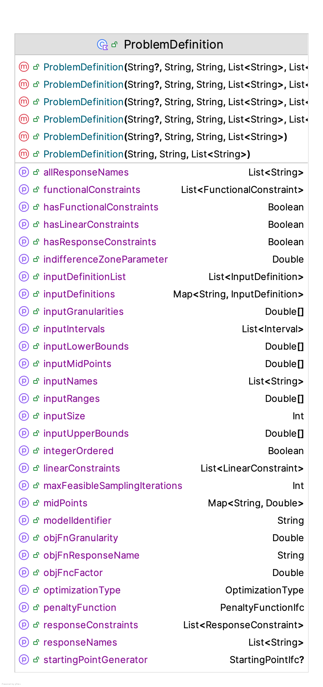
Let’s take a closer look at the constructor for the ProblemDefinition class.
class ProblemDefinition @JvmOverloads constructor(
problemName: String? = null,
val modelIdentifier: String,
val objFnResponseName: String,
inputNames: List<String>,
responseNames: List<String> = emptyList(),
val optimizationType: OptimizationType = OptimizationType.MINIMIZE,
indifferenceZoneParameter: Double = 0.0,
objFnGranularity: Double = 0.0
) : IdentityIfc by Identity(problemName) The constructor requires a string modelIdentifier that represents a unique identifier for the model associated with the optimization problem. This identifier will be used to ensure that the simulation evaluation process connects the requests for simulation evaluations with the correct model.
We do not specify a functional form for the objective function, \(G(\vec{x})\). Instead, the problem definition must specify a valid name for the simulation response variable that represents the objective function via the objFnResponseName property. Similarly, the problem definition requires the names of the response variables associated with the response constraints in the form of the responseNames list. The type of optimization problem must be specified. Finally, the list of strings, inputNames represents the named input (decision) variables related to the model. This list must not be empty. If the list has repeated elements, they are removed. We will discuss how to specify these names when an example is presented. The indifferenceZoneParameter parameter represents the smallest actual difference that is important to detect for the objective function response. This parameter can be used by solvers to determine if differences between solutions are considered practically significant. We will discuss the concept of granularity in Section 11.2.2.
Figure 11.3 presents the functions for the ProblemDefinition class. This functionality includes:
- adding/defining/validating input variables
- adding/defining linear constraints
- adding/defining functional constraints
- adding/defining response constraints
- randomly generating feasible points in the input space
- converting arrays of variables to valid input variables
- checking for different feasibility conditions and computing constraint violations
- specifying a penalty function for translating a constrained problem to an unconstrained problem
- representing neighborhoods for the problem
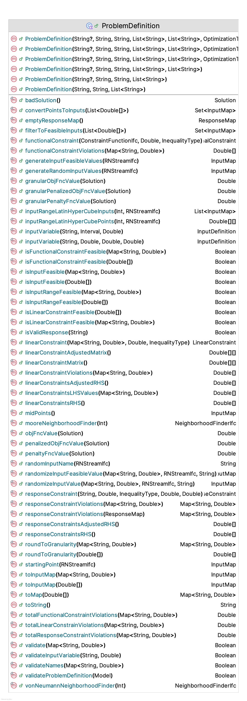
11.2.1 Specifying Penalty Functions
Many algorithms utilize penalty functions to address constraint violations within the search process. Penalty functions are a variation on the Lagrangian approach of converting a constrained optimization into an unconstrained optimization problem. Recall the standardized minimization representation:
\[ \begin{aligned} & \min g(\vec{x}) = E[G(\vec{x})] \\ & \sum_{i=1}^{|I|}a_{ij}x_i \leq b_j \quad \textrm{for} \quad j=1,\dots,|L|\\ & f_{i} (\vec{x}) \leq c_{i} \quad \textrm{for} \quad i=1,\dots,|F|\\ & E[R_{i}(\vec{x})] \leq r_i \quad \textrm{for} \quad i=1,\dots,|R|\\ & l_i \leq x_i \leq u_i \quad \textrm{for} \quad i=1,\dots,|I| \end{aligned} \]
We see that each constraint is presented as a less than or equal to constraint. Let’s call the left-hand side of any constraint, \(LHS_k\), and the right-hand side \(RHS_k\), where \(k\) represents one of the linear, functional or response constraints. A violation of the constraint occurs if \(LHS_k > RHS_k\). If this occurs, then we have a violation, and the amount of the violation is the difference, \(LHS_k - RHS_k\). Let \(v_k\) represent the violation associated with constraint \(k\), where \(v_k = \max(0, LHS_k - RHS_k)\). Let \(K\) represent the total number of constraints. That is \(K = |L| + |F| + |R|\). For the purposes of the penalty function, we ignore the lower and upper bound constraints. If you need to include a bound type constraint within the penalty function processing, then you can easily do that by using a linear constraint.
There are many possible approaches to defining a penalty function. To facilitate different kinds of penalty functions, the ksl.simopt.problem package provides an abstract PenaltyFunction class. A penalty function is bound to the one constraint it serves and computes its contribution directly from a solution:
abstract class PenaltyFunction(val constraint: PenalizableConstraint?) {
/** Returns a copy of this penalty bound to the supplied constraint. */
abstract fun boundTo(c: PenalizableConstraint): PenaltyFunction
/** The penalty contribution for this penalty's constraint at the supplied solution. */
abstract fun penalty(solution: Solution): Double
}Both the ConstraintIfc interface implemented for (linear and functional constraints) and ResponseConstraint implement a small shared PenalizableConstraint capability, reporting a non-negative violation magnitude for a solution and a stable identity key, which is what lets a single PenaltyFunction serve either kind of constraint. A penalty function you write or configure is typically an unbound template (its constraint property is null); the ProblemDefinition class resolves each constraint’s effective template and its own override if supplied; otherwise, the problem’s type-level default is used as a bound copy the first time it is needed, and caches the result.
The package provides two kinds of built-in penalty functions, distinguished by whether they remember anything about past visits to a solution.
The DynamicPolynomialPenalty class represents a memory-less function and is the default for all three constraint categories:
\[ P(v_k, t) = \left(C \cdot t^{\beta}\right) \cdot v_k^{\alpha} \]
where \(t\) is the solution’s evaluation number and \(C\) (basePenalty), \(\beta\) (iterationExponent), and \(\alpha\) (violationExponent) are constructor parameters, defaulting to \(C=100\), \(\beta=1\), and \(\alpha=1\). With these defaults, this is the “naive” penalty of (Park and Kim 2015): an increasing sequence multiplying the raw violation.
NOTE! The violation exponent \(\alpha\) defaults to 1, not 2. Squaring a violation that is naturally a fraction—a fill-rate gap of 0.02, say—makes the penalty smaller, not larger, which is rarely what you want. Raise \(\alpha\) above 1 only for violations that are naturally on the order of 1 or larger.
The ParkKimPenalty class additionally remembers, for each solution and response constraint, how infeasible that solution has looked across every visit the solver has made to it. Each visit contributes a standardized measure of how far that visit’s estimated response fell from the constraint’s right-hand side; folding a new visit in updates a running average \(S\) across all of a solution’s visits, positive when the solution looks infeasible on average. \(S\) in turn drives a penalty-sequence value \(\lambda\): \(\lambda\) appreciates (multiplies by a factor \(a>1\)) when \(S\) indicates infeasibility and depreciates (multiplies by a factor \(d \in (0,1)\)) when \(S\) indicates feasibility. The penalty actually charged uses only the current \(S\) and \(\lambda\):
\[ P = \lambda \cdot [S]^+, \qquad [S]^+ = \max(0, S) \]
(Park and Kim 2015) give the full derivation of \(S\) and prove that a sequence satisfying their Condition 1, implies diverging for an infeasible constraint and vanishing for a feasible one, makes the penalized objective converge to the true constrained optimum. The AppreciateDepreciateSequence class represents the KSL’s implementation of their foundational appreciate/depreciate rule. A memoryful penalty is recognizable by overriding usesMemory to return true, and by overriding a third hook, foldVisit(), that folds each new visit’s observations into a constraint’s running memory; the sequence rule itself is pluggable via the PenaltySequence interface, so more refined sequences from the literature could be added later without changing how penalties are computed or folded.
Because it needs a visit history, ParkKimPenalty falls back to a memory-less penalty (DynamicPolynomialPenalty by default) until a solution has been visited more than once. It is opt-in, not a default:
problemDefinition.defaultResponsePenalty = ParkKimPenalty(
sequence = AppreciateDepreciateSequence(appreciationFactor = 2.0, depreciationFactor = 0.5)
)The same penaltyFunction argument accepted by responseConstraint() can instead attach a ParkKimPenalty to one specific response constraint rather than every response constraint in the problem.
NOTE! ParkKimPenalty only has something to remember if the solver actually revisits the same design point more than once. Many solvers evaluate each candidate point once and move on, in which case ParkKimPenalty behaves exactly like its memory-less fallback. It is most useful paired with a solver and replication policy that deliberately re-samples promising points with a growing number of replications.
ProblemDefinition exposes one default penalty function per constraint category, each independently settable:
var defaultLinearPenalty: PenaltyFunction = DynamicPolynomialPenalty.defaultPenaltyFunction
var defaultFunctionalPenalty: PenaltyFunction = DynamicPolynomialPenalty.defaultPenaltyFunction
var defaultResponsePenalty: PenaltyFunction = DynamicPolynomialPenalty.defaultPenaltyFunctionAny individual linear or response constraint can override its category’s default by supplying a penaltyFunction argument when it is created:
fun linearConstraint(
equation: Map<String, Double>,
rhsValue: Double = 0.0,
inequalityType: InequalityType = InequalityType.LESS_THAN,
penaltyFunction: PenaltyFunction? = null
): LinearConstraint
fun responseConstraint(
name: String,
rhsValue: Double,
inequalityType: InequalityType = InequalityType.LESS_THAN,
target: Double = 0.0,
tolerance: Double = 0.0,
penaltyFunction: PenaltyFunction? = null
): ResponseConstraintNOTE! functionalConstraint() does not accept a penaltyFunction argument; every functional constraint in a problem uses defaultFunctionalPenalty. If a functional constraint needs a different penalty, change defaultFunctionalPenalty for the problem. Keep in mind that this changes the penalty for every functional constraint in that problem, not just one.
ProblemDefinition.penaltyFncValue(solution: Solution) sums the bound penalty functions’ contributions across every constraint:
fun penaltyFncValue(solution: Solution): Double {
var totalPenalty = 0.0
val bound = boundPenalties()
for (lc in linearConstraints) totalPenalty += bound.getValue(lc).penalty(solution)
for (fc in functionalConstraints) totalPenalty += bound.getValue(fc).penalty(solution)
for (rc in responseConstraints) totalPenalty += bound.getValue(rc).penalty(solution)
return totalPenalty
}The returned value is always non-negative and is not adjusted for the direction of optimization. Internally, ProblemDefinition always works with a minimization-oriented objective where penalizedObjFncValue = objFncValue + penaltyFncValue(solution). Thus, a constraint violation must always make the penalized value worse, whether the underlying problem minimizes or maximizes.
For a ParkKimPenalty bound constraint, penalty(solution) only reads the memory already carried on the solution. It does not update it. New observations are folded into a solution’s memory exactly once, when the simulation oracle actually produces them: after each evaluation, the Evaluator calls ProblemDefinition.foldPenaltyMemory(), which asks every memoryful bound penalty to fold that visit’s new observations in, and the result is carried on the resulting Solution. Scoring the same solution again later, for example, when re-ranking solutions pulled from a cache, does not, by itself, add another visit.
ProblemDefinition also provides functions that compute raw violations directly, independent of any penalty function—useful for reporting, or for writing your own penalty logic:
linearConstraintViolations(inputs: Map<String, Double>): DoubleArraytotalLinearConstrainViolations(inputs: Map<String, Double>): DoublefunctionalConstraintViolations(inputs: Map<String, Double>): DoubleArraytotalFunctionalConstraintViolations(inputs: Map<String, Double>): DoubleresponseConstraintViolations(averages: Map<String, Double>): Map<String, Double>totalResponseConstraintViolations(averages: Map<String, Double>): Double
Users needing a different penalty structure altogether can implement PenaltyFunction directly and assign it as one of ProblemDefinition’s three category-level defaults, or as a penaltyFunction argument on an individual linear or response constraint.
11.2.2 Defining Input Variables
For optimization problems, the decision variables are the key quantities that need to be determined. For a ProblemDefinition instance, the InputDefinition class, illustrated in Figure 11.4 is used to define the decision variables.
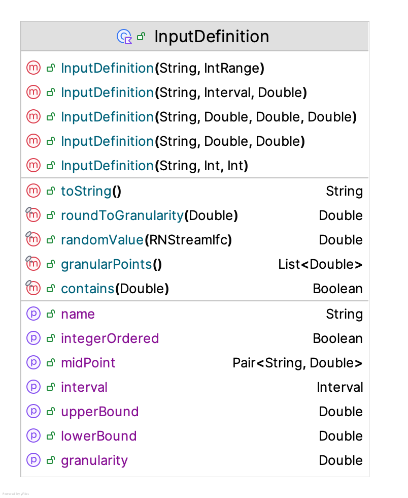
The constructor for defining inputs is as follows:
class InputDefinition @JvmOverloads constructor(
val name: String,
val lowerBound: Double,
val upperBound: Double,
granularity: Double = 0.0
) The user provides the name of the input and its bounds. The name must match one of the input names within the problem definition instance.
Finally, there is the granularity parameter. The specified granularity indicates the acceptable precision for the variable’s value with respect to decision-making. If the granularity is 0 then no rounding will be applied when evaluating the variable. Granularity defines the level of precision for an input variable to which the problem will be solved. Setting granularity to 0, the default, means that the solver will attempt to find a solution to the level of machine precision. For any positive granularity value, the solution will be found to some multiple of that granularity. As a special case, setting granularity to 1 implies an integer-ordered input variable. The specification of granularity reflects a reality for the decision maker that there is a level of precision beyond which it is not practical to implement a solution.
Granularity represents the finest division of the measurement scale. For example, a 12-inch rule that has inches divided into 4 quarters has a granularity of 1/4 or 0.25. The granularity parameter specifies the degree of this precision so that a function can be applied which rounds the supplied value to the nearest multiple of the granularity. Suppose, we had a quarter inch granularity, the rounding process would round 3.1459 to 3.25 because 3.25 is the nearest multiple of the granularity of (0.25). For the case of 3.0459 with a granularity of 0.25, the value of 3.0459 would be rounded to 3.0. Thus, with a quarter inch granularity we can only have values that are multiples of 0.25. In essence, this permits a discretization of a continuous variable to points that are realistic with respect to the measurement scale associated with the variable. Thus, continuous variables can be handled as discrete variables if necessary. This functionality recognizes that any variable represented on a digital computer is a discrete representation (even to machine precision). For many realistic problems, from a practical standpoint, we cannot implement decision variables beyond some level of granularity.
If an input variable is defined with a granularity of 1.0, then it is considered integer-ordered. If an optimization problem has only integer-ordered decision variables, then the problem is considered integer-ordered. Some solvers are constructed to specifically handle this kind of problem. The R-SPLINE solver discussed in (Wang et al. 2013) is an integer-ordered solver and has been implemented within the KSL.
11.2.3 Linear and Functional Constraints
The specification of constraints is similar to defining input variables. The ProblemDefinition class provides functions that allow the specification of each type of constraint: linear, functional, and response. The LinearConstraint class indicates how to compute a linear constraint. Figure 11.5 presents the ConstraintIfc interface with two implementations in the LinearConstraint and FunctionalConstraint classes.
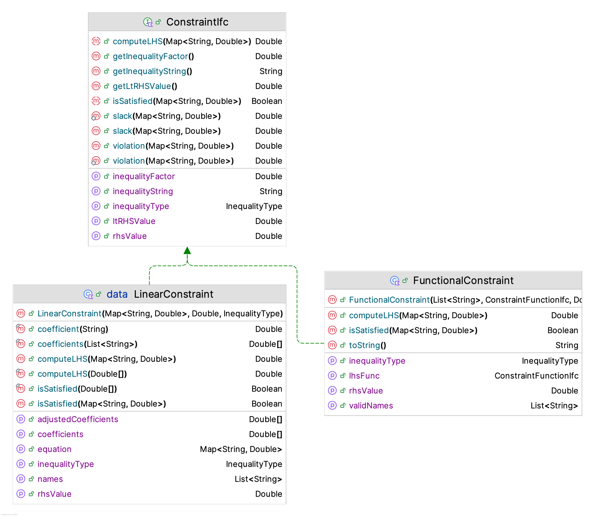
The LinearConstraint class takes in a map that provides the coefficient \(a_i\) associated with each decision variable \(x_i\). Because of the linear form of the equation, this representation is sufficient to define the linear equation. In addition, the right-hand side variable \(b_j\) and the form of the inequality is specified. The class will translate a greater than constraint to the mathematically equivalent less than constraint.
data class LinearConstraint(
val equation: Map<String, Double>,
override var rhsValue: Double = 0.0,
override val inequalityType: InequalityType = InequalityType.LESS_THAN
) : ConstraintIfcAs noted in Figure 11.5, deterministic constraints can compute the left-hand side of the constraint and compare it with the right-hand side to determine if the constraint is satisfied, whether there is slack in the constraint, and the amount of the constraint’s violation.
As shown in the FunctionalConstraint constructor, the constraint is defined as a function of the input parameters.
class FunctionalConstraint(
validNames: List<String>,
val lhsFunc: ConstraintFunctionIfc,
override val rhsValue: Double = 0.0,
override val inequalityType: InequalityType = InequalityType.LESS_THAN
) : ConstraintIfc {The ConstraintFunctionIfc interface is a functional interface. It simply takes in a map containing the named input variables and their values and returns the left-hand side of the constraint. Thus, the user can specify any functional form by implementing this interface.
fun interface ConstraintFunctionIfc {
fun lhs(inputs: Map<String, Double>): Double
}11.2.4 Response Constraints
The final type of constraint is the response constraint. Response constraints are different from deterministic constraints because these constraints rely on the execution of the simulation model for the observation of their values. These are very difficult constraints within a mathematical programming context. Figure 11.6 provides the KSL representation for modeling response constraints.
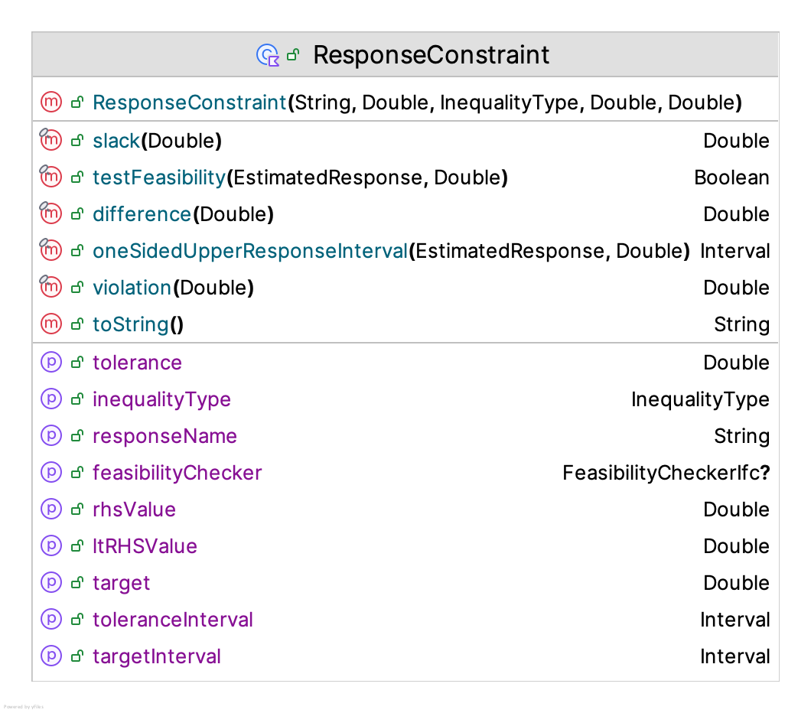
A response constraint requires the name of a valid simulation response variable, the right-hand side value, and the type of inequality. In addition, some solvers may utilize information about a constraint in the form of a target and a tolerance. The target parameter is used by some algorithms to serve as a cut-off point between desirable and unacceptable solutions with respect to the constraint. The tolerance parameter is used by some algorithms to specify how much the decision maker is willing to be off from the target and is conceptually similar to an indifference parameter.
class ResponseConstraint(
val responseName: String,
val rhsValue: Double,
val inequalityType: InequalityType = InequalityType.LESS_THAN,
val target: Double = 0.0,
val tolerance: Double = 0.0
) {Response constraints will also compute the slack and violation amounts. The default implementation is to not take into account randomness in these calculations. In essence, this treats the estimated response value as “deterministic” when computing the violation. Recognizing that feasibility checking may be more complex with these stochastic constraints, the ResponseConstraint class permits the user to supply an instance of a the FeasibilityCheckerIfc interface.
fun interface FeasibilityCheckerIfc {
fun isFeasible(
responseConstraint: ResponseConstraint,
estimatedResponse: EstimatedResponse,
confidenceLevel: Double
): Boolean
}The FeasibilityCheckerIfc interface allows for the checking of feasibility based on some statistical confidence. If the user supplies an instance of this interface, then it will be used when testing for feasibility for a response constraint. Now, let’s take a look at an example to illustrate how to specify a problem.
11.2.5 Setting Up a Problem Definition
Example 11.1 (Reorder Point, Reorder Quantity Inventory Model) An inventory manager is interested in understanding the cost and service trade-offs related to the inventory management of computer printers. Suppose customer demand occurs according to a Poisson process at a rate of 3.6 units per month and the lead time is 0.5 months. The manager has estimated that the holding cost for the item is approximately $0.25 per unit per month. In addition, when a back-order occurs, the estimate cost will be $1.75 per unit per month. Every time that an order is placed, it costs approximately $0.15 to prepare and process the order. The inventory manager wants to find the optimal setting for the reorder point and the reorder quantity with respect to the total ordering and holding cost while ensuring a fill rate of at least 0.95. Set up a KSL simulation optimization problem for this situation.
This is Example 7.9 from Chapter 7. To prepare to use the implemented model from Example 7.9, we need to ensure that controls are defined for the input variables and to note the names of the responses involved in the problem. The two decision variables are the reorder point and the reorder quantity. Within the RQInventory class, we have the following defined controls:
@set:KSLControl(
controlType = ControlType.INTEGER,
lowerBound = 0.0
)
var initialReorderPoint: Int
get() = myInitialReorderPt
set(value) {
setInitialPolicyParameters(value, myInitialReorderQty)
}
@set:KSLControl(
controlType = ControlType.INTEGER,
lowerBound = 1.0
)
var initialReorderQty: Int
get() = myInitialReorderQty
set(value) {
setInitialPolicyParameters(myInitialReorderPt, value)
}Recall from Section 10.1.1 of Chapter 5 that the name of the control will be the model element’s name concatenated with the name of the property separated by a “dot”. In the RQInventorySystem class definition, we see that the instances of inventory use the name supplied for the parent with the string “Item” as shown in the following code.
private val inventory: RQInventory = RQInventory(
this, reorderPt, reorderQty, replenisher = Warehouse(), name = "${this.name}:Item"
)Thus, the names of the two controls will be the strings:
- “Inventory:Item.initialReorderQty”
- “Inventory:Item.initialReorderPoint”
The fill rate and total ordering and holding cost responses have similar naming conventions resulting in these strings:
- “Inventory:Item:FillRate”
- “Inventory:Item:OrderingAndHoldingCost”
These names are essential for constructing the problem definition. Section 10.1.1 also describes how to get the names of all controls within a model.
Finally, we need to know the model identifier. By default, this will be the assigned the name of the model, but in general it is user assignable. The basic code for building the reorder point, reorder quantity inventory model is as follows:
val reorderQty: Int = 2
val reorderPoint: Int = 1
val model = Model("RQInventoryModel")
val rqModel = RQInventorySystem(model, reorderPoint, reorderQty, "Inventory")
rqModel.initialOnHand = 0
rqModel.demandGenerator.initialTimeBtwEvents = ExponentialRV(1.0 / 3.6)
rqModel.leadTime.initialRandomSource = ConstantRV(0.5)
model.lengthOfReplication = 20000.0
model.lengthOfReplicationWarmUp = 10000.0
model.numberOfReplications = 40Thus, the model identifier will be the string “RQInventoryModel”. Now, the code for constructing the problem definition can be completed.
val problemDefinition = ProblemDefinition(
problemName = "InventoryProblem",
modelIdentifier = "RQInventoryModel",
objFnResponseName = "Inventory:Item:OrderingAndHoldingCost",
inputNames = listOf("Inventory:Item.initialReorderQty", "Inventory:Item.initialReorderPoint"),
responseNames = listOf("Inventory:Item:FillRate")
)
problemDefinition.inputVariable(
name = "Inventory:Item.initialReorderQty",
interval = Interval(1.0, 100.0),
granularity = 1.0
)
problemDefinition.inputVariable(
name = "Inventory:Item.initialReorderPoint",
interval = Interval(1.0, 100.0),
granularity = 1.0
)
problemDefinition.responseConstraint(
name = "Inventory:Item:FillRate",
rhsValue = 0.95,
inequalityType = InequalityType.GREATER_THAN
)The constructor uses a user assignable name for the problem, the model identifier, the name of the response for the objective function, the names of the input (decision) variables, and the names of the responses. Note that the type of optimization was not specified. Thus, the type is minimization by default. Then, the two input variables representing the initial reorder point and initial reorder quantity are defined over search intervals. Notice that the granularity is set to 1.0, which indicates that this is an integer-ordered (discrete) problem. Finally, the fill rate constraint is added to indicate that desired solutions need to have the fill-rate response greater than 95 percent. The problem definition instance will be required when setting up the solver and the simulation evaluation process.
11.3 Representing the Simulation Oracle
The simulation oracle is a term used to represent the concept of the simulation model as a “black-box” that accepts inputs and returns outputs as illustrated in Figure 11.1. To be able to define general problems and have them solved by general algorithms, a protocol needs to be established to represent the inputs, the model, and the outputs for generation, use, and consumption by optimization solvers. The purpose of the ksl.simopt.evaluator package is to provide classes and interfaces that establish this interaction protocol.
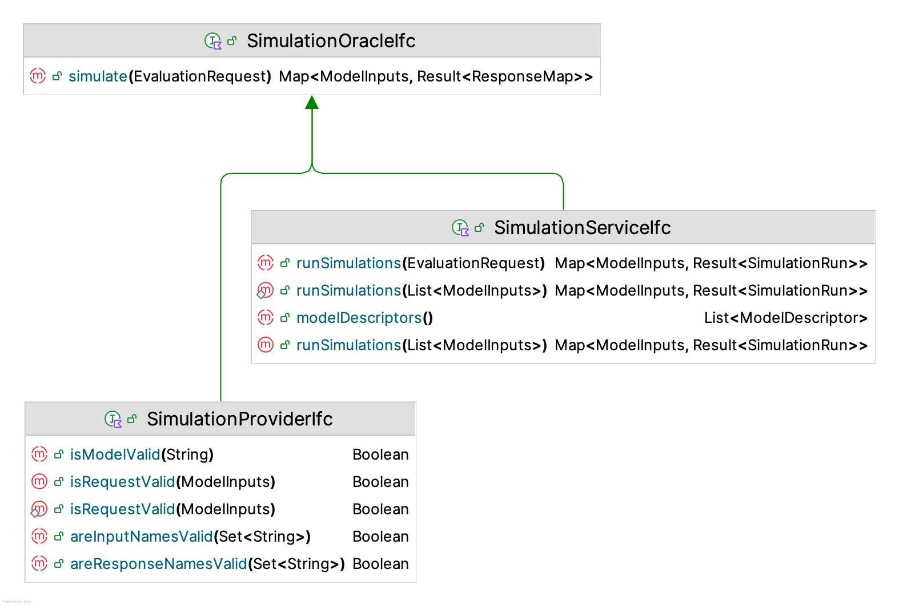
Figure 11.7 presents three major interfaces which support the general execution of KSL simulation models. The SimulationOracleIfc interface provides behavior that receives evaluation requests (inputs) and translates those requests to simulation results. An implementer of the SimulationProviderIfc interface is a simulation oracle that has additional functionality to validate evaluation requests. A simulation provider is associated with a single simulation model. The SimulationServiceIfc interface also implements the SimulationOracleIfc interface and has the capability to execute simulation requests for multiple models.
11.3.1 Requesting Simulation Evaluations
This discussion will focus on the simulation oracle and how it relates to the EvaluatorIfc interface shown in Figure 11.8.
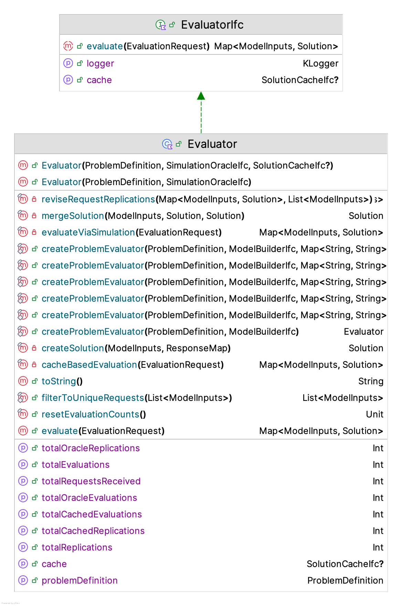
As we will see in the section concerning solvers, solvers use implementations of the EvaluatorIfc interface to request simulation evaluations. As can be seen in Figure 11.8, the constructor for the Evaluator class requires an instance of the ProblemDefinition class and an instance of an implementation of the SimulationOracleIfc interface. In essence, implementations of the EvaluatorIfc interface translate simulation results into in solutions that solvers can use. The following will overview this process starting with what it means to make a request for a simulation evaluation.
The process for requesting a simulation execution starts with an instance of the EvaluationRequest class. As shown in Figure 11.9, an evaluation request is a data class which holds model inputs and options for the simulation execution process.
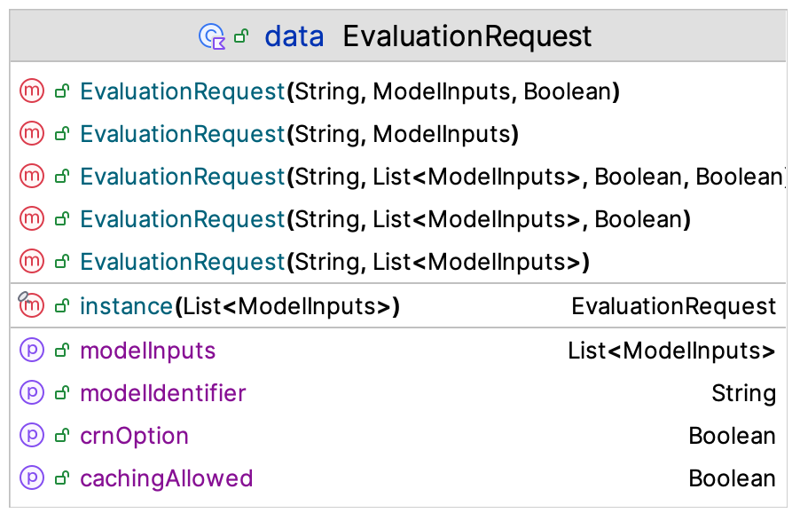
An evaluation request represents many possible evaluations in the form of a list of model inputs. The evaluation request specifies the model via the model identifier, whether the evaluations should be run with common random numbers, and whether cached results can be used to satisfy the request. The option to run the evaluations with common random numbers is only valid if there are two or more requested evaluations (i.e. the list of model inputs has two or more elements). In addition, using cached results is not allowed if the request uses common random numbers. Thus, an evaluation request represents a set of simulation executions that will be handled by the simulation oracle. The evaluation requests are translated into a map of model inputs with the results within a map of responses. Let’s take a closer examination of these two concepts.
11.3.2 Representing Model Inputs
As noted in Figure 11.9, an evaluation request consists of a list of model inputs. A model input is a specification for the inputs that will be used for the simulation run and the outputs that are requested. Figure 11.10 shows the ModelInputs class.
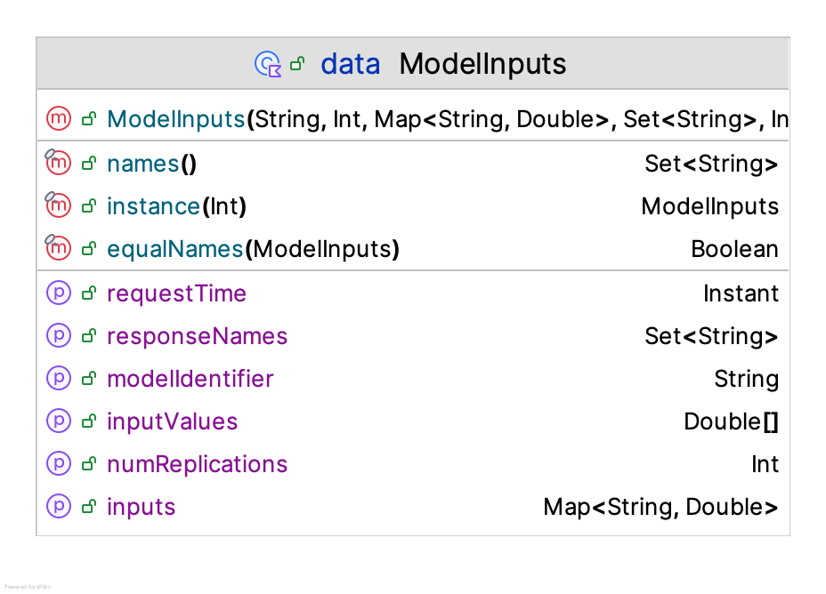
The ModelInputs class is also a Kotlin data class. As can be noted in the data class’s constructor, model inputs require the model identifier, the number of replications for the simulation run, the inputs (specified as name, value pairs in a map), and the names of the responses required from the simulation run. If the inputs map is empty, the current settings of the simulation model are used for the simulation execution. If the set of response names is empty, then all responses from the simulation are returned.
data class ModelInputs(
val modelIdentifier: String,
val numReplications: Int,
val inputs: Map<String, Double> = emptyMap(),
val responseNames: Set<String> = emptySet(),
val requestTime: Instant = Clock.System.now()
)Model inputs have a very special representation for determining their equality. Two instances of the ModelInputs class are considered equal if:
- the
modelIdentifierproperties are equal, and - the
responseNamesproperties are equal (contain all the same response names), and - the
inputsproperties are equal (contain the same (key, value) pairs)
It is important to note that two instances will be considered equal even if their number of requested replications are different. This definition of equality facilitates the caching of results by model inputs.
So far, we have discussed the inputs to the simulate() function of the SimulationOracleIfc interface. Each model input in the evaluation request is paired with the requested responses in the form of a map. The SimulationOracleIfc interface prescribes that the responses are wrapped within a Kotlin Result instance. A Kotlin Result indicates whether an outcome from a process was a success or a failure. Since simulation evaluations may be executed remotely via simulation services, there are many opportunities for failure to occur (e.g. network failure, service denial, etc.). A more likely scenario is that some execution error occurred during the simulation run. Thus, the user of the simulation oracle can react according to the success or failure of the request.
interface SimulationOracleIfc {
fun simulate(evaluationRequest: EvaluationRequest): Map<ModelInputs, Result<ResponseMap>>
}11.3.3 Representing Model Outputs
Now we can discuss the ResponseMap class. The ResponseMap class, illustrated in Figure 11.11, is also a Kotlin data class. The use of data classes for the mappings between inputs and outputs is an intentional part of the package design. The data classes are serializable, which facilitates their distribution via network calls.
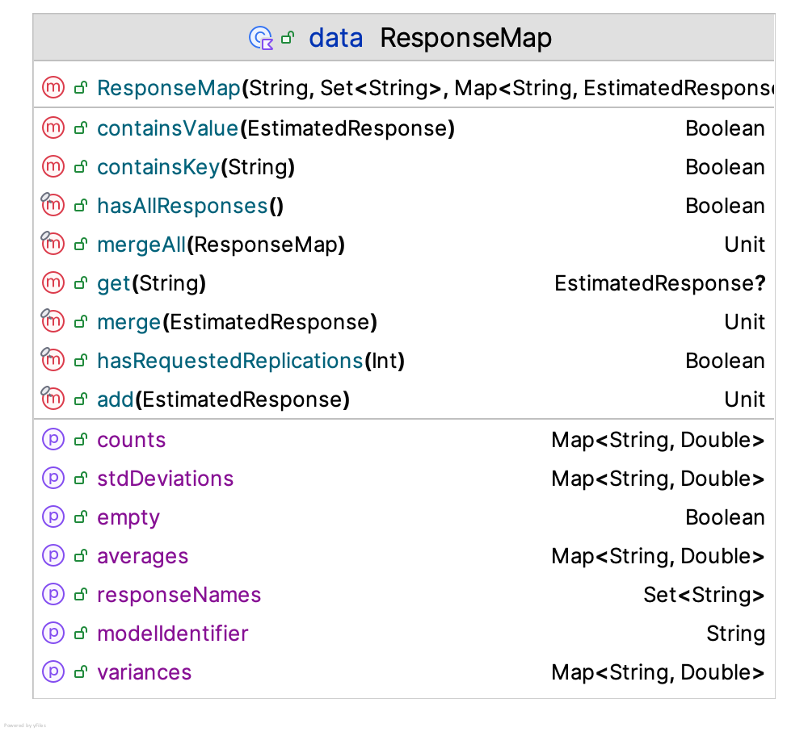
The ResponseMap class is a map. In fact, it implements the Map<String, EstimatedResponse> interface. The string key for the map is the name of the response (as per the model and the EvaluationRequest) and the paired value is an instance of the EstimatedResponse class. The EstimatedResponse class, illustrated in Figure 11.12, holds basic summary statistics across the replications associated with the simulation run. The ResponseMap class has functionality that facilitates the reporting of statistics for its contained EstimatedResponse instances. In addition, the ResponseMap class facilitates the merging of the responses that it contains. This is important for the case of solvers that may revisit decision points with additional requests for replications. If caching is available, then the results from previous samples are merged with new samples so that the cached replications can partially fill the request.
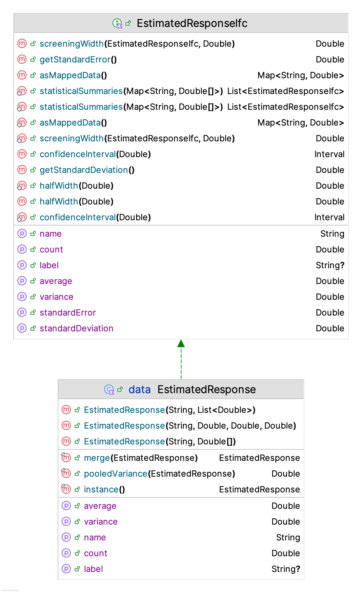
Suppose we have two estimates for the same response, with summary statistics (\(\bar{x}_1\), \(s^2_1\), \(n_1\)) and (\(\bar{x}_2\), \(s^2_2\), \(n_2\)). Merging of the two response estimates, creates a single estimated response (\(\bar{x}\), \(s^2\), \(n\)). We assume that the two estimates are from independent samples. The values for \(n\) and \(\bar{x}\) are as follows:
\[ \begin{gathered} n = n_1 + n_2\\ \bar{x} = \frac{n_1\bar{x}_1+n_2\bar{x}_2}{n} \end{gathered} \] Thus, \(\bar{x}\) is the weight-average of the estimates. The computation of \(s^2\) follows the idea of a pooled variance. For the case where \(n_1 >2\) and \(n_2 > 2\), we can compute the weighted average:
\[ s^2 = \frac{(n_1-1)s^2_1+(n_2-1)s^2_2}{n-2} \] The case where \(n_1 = 1\) and \(n_2 = 1\) can be handled easily by noting that this is the same as two independent observations. The cases where \(n_1 = 1\) and \(n_2 = 2\) or \(n_1 = 2\) and \(n_2 = 1\) can be handled by noting that the situation with \(n_i=1\) is just adding an additional observation to a statistical summary. The assumption that the estimates are independent is important when computing the variances. This is one of the main reasons that necessitates not using cached results when common random numbers is used.
Within the context of an optimization problem, the algorithms require solutions. This brings up the final topic of this section. The translation of responses to solutions. As noted at the beginning of this section, solvers require the implementation of the EvaluatorIfc interface. As we can see from the definition of the interface, the interface provides a translation from evaluation requests to solutions. Every request to the simulation oracle for a set of inputs is translated to a map that contains the model inputs that resulted in the returned solution.
interface EvaluatorIfc {
/**
* A possible cache to hold evaluated solutions
*/
val cache: SolutionCacheIfc?
/**
* Processes the supplied requests for solutions. The solutions may come from an associated
* solution cache (if present or allowed) or via evaluations by the simulation oracle.
* The CRN option is applied to the set of requests and does not permit
* cached solutions, even if caching is permitted.
*
* @param evaluationRequest a request for evaluation
* @return a map containing the model inputs and resulting solutions as pairs
*/
fun evaluate(evaluationRequest: EvaluationRequest): Map<ModelInputs, Solution>
}Figure 11.13 presents the Solution class. Again, the Solution class is a Kotlin data class. It holds the inputs that caused the solution, the objective function, and a list of the estimated responses for the response constraints.
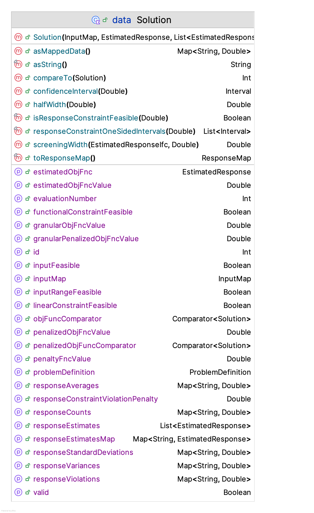
As we can see from the constructor, the inputMap property holds the inputs associated with the solution. The estimatedObjFnc property represents the estimated objective function value as an EstimatedResponse instance. The responseEstimates property hold the list of the response associated with the response constraints. The evaluationNumber is an integer that marks the current number of evaluations performed by the evaluator that produced the solution. In essence, calls for evaluation produce a sequence of solutions. The isValid property is used to indicate whether the solution is valid. A solution will be invalid if there was some problem or exception that occurred during the evaluation process. Invalid solutions will also be constructed as bad solutions. Essentially, a bad solution is a solution that is infeasible and has the worse possible objective function value with respect to the problem instance.
data class Solution(
val inputMap: InputMap,
val estimatedObjFnc: EstimatedResponse,
val responseEstimates: List<EstimatedResponse>,
val evaluationNumber: Int,
val isValid: Boolean = true
) : Comparable<Solution>, FeasibilityIfc by inputMap, EstimatedResponseIfc by estimatedObjFncAs can be noted by the constructor, solutions can be compared and their feasibility checked. Feasibility is established with respect to the problem instance. There are four types of feasibility modeled.
- Input range feasibility - If the input values are within the ranges defined for the input variable, then the solution is considered input range feasible.
- Linear constraint feasibility - If the input values satisfy all linear constraints, then the solution is considered feasible with respect to the linear constraints.
- Functional constraint feasibility - If the input values satisfy all functional constraints, then the solution is consider feasible with respect to the functional constraints.
- Input feasible - If the input values are input range feasible, linear constraint feasible, and functional constraint feasible, then the solution is considered input feasible.
Notice that feasibility ignores the issue of feasibility with respect to the response constraints. Essentially, input feasibility is checking the inputs. It does not check the outputs (response). A solution implements the EstimatedResponseIfc interface based on the value of the estimated objective function response.
To summarize, the procedures defined in the ksl.simopt.evaluator package permit requests for simulation evaluations. The inputs to the simulation model are contained within the request. The simulation model is executed at the specified inputs and the requested results returned. For simulation optimization algorithms, the input-output mapping is encapsulated within instances of the Solution class. The Solution class contains information on the following:
- The inputs used to execute the simulation.
- The value of the objective function estimated via simulation, the penalized objective function value, and the constraint violations.
- The estimated responses involved in any response constraints.
- The ability to assess the feasibility of the solution with respect to the inputs and deterministic constraints.
The information from solutions is designed to be consumed by simulation optimization algorithms, which is the topic of the next section.
11.4 Characterizing Simulation Optimization Algorithms
The KSL ksl.simopt.solvers package provides a general framework for designing and implementing simulation optimization algorithms. For the purpose of this section, we call these algorithms, solvers. The solver package provides the Solver abstract base class that can be specialized to implement different algorithms. The KSL also provides a set of implemented algorithms for use on simulation optimization problems. Figure 11.14 illustrates the class hierarchy for existing solvers. The Solver class and the StochasticSolver classes are abstract base classes. Essentially, the Solver class defines the basic properties and methods needed for solving an optimization problem. The StochasticSolver class assumes that the optimization process may incorporate random search and provides the solver access to random streams.
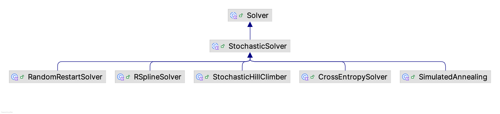
The constructors for the Solver class and the StochasticSolver class show that a solver must have a reference to the problem and an evaluator. In addition, solvers are conceptualized as iterative processes. Each iteration of a solver may evaluate solutions and move towards a “best” solution. Thus, solvers require a limit on the maximum number of iterations. As we will see, there will be more general ways to implement stopping conditions; however, every solver has a pre-specified maximum number of iterations permitted before it will stop.
Within the context of simulation optimization, the supplied evaluator promises to execute requests for evaluations of the simulation model at particular design points (as determined by the algorithm). In addition, because of the stochastic nature of the evaluation, the solver may request one or more replications for its evaluation requests. The number of replications may change dynamically, and thus the user needs to supply a function to determine the number of replications per evaluation. Within the framework of the hooks for sub-classes, the user could specify more complex procedures for determining the number of replications per evaluation. The constructor provides a the ReplicationPerEvaluationIfc interface to specify the current number of replications for each evaluation request. The number of replications can vary as the solver proceeds. Solvers also emit solutions to permit tracking/tracing the solution process.
abstract class Solver(
val problemDefinition: ProblemDefinition,
evaluator: EvaluatorIfc,
maximumIterations: Int,
var replicationsPerEvaluation: ReplicationPerEvaluationIfc,
name: String? = null
) : IdentityIfc by Identity(name), Comparator<Solution>, SolverEmitterIfc by SolverEmitter() {The StochasticSolver inherits from the Solver class and requires that a source of random streams be provided. It also allows stream control.
abstract class StochasticSolver(
problemDefinition: ProblemDefinition,
evaluator: EvaluatorIfc,
maxIterations: Int,
replicationsPerEvaluation: ReplicationPerEvaluationIfc,
streamNum: Int = 0,
val streamProvider: RNStreamProviderIfc = KSLRandom.DefaultRNStreamProvider,
name: String? = null
) : Solver(problemDefinition, evaluator, maxIterations, replicationsPerEvaluation, name), RNStreamControlIfc {11.4.1 Structure of the Iterative Process
A solver is an iterative algorithm that searches for the optimal solution for a defined problem. In the abstract Solver class, the algorithm is conceptualized as having a main iterative loop. The basic algorithm is structured conceptually as an iterative loop:
initializeIterations()
while(hasNextIteration()){
mainIteration()
iterationCounter++
checkStoppingCondition()
}
endIterations()First the algorithm is initialized. Then, while there are additional iterations or the stopping criteria has not been met the main iteration is executed. After all the iterations have ended, there is a clean up phase. The loop is the main loop that ultimately determines the convergence of the algorithm and recommended solution. Some algorithms have additional “inner” loops”. In general, inner loops are often used to control localized search for solutions. If an algorithm has additional inner loops, these can be embedded within the main loop via the sub-classing process. Specialized implementations may have specific methods for determining stopping criteria; however, to avoid the execution of a large number of iterations, the iterative process has a specified maximum number of iterations.
The Solver class has three abstract protected functions that must be implemented.
protected abstract fun startingPoint(): InputMap- The purpose of this function is to determine the starting point for the solver’s process. In the default implementation, this function is called from theinitializeIterations()function.protected abstract fun nextPoint(): InputMap- The purpose of this function is to determine the next point to be evaluated for the solver’s process. Specific implementations will call this function within their implementations of themainIteration()function.protected abstract fun mainIteration()- The purpose of this function is to contain the logic that iteratively executes until the maximum number of iterations is reached or until the stopping criteria is met.
The Solver class has these protected open functions that can be overridden with more specific behavior:
protected open fun initializeIterations()- This function is called prior to the running of the main loop of iterations. The base implementation determines a starting point, requests an evaluation, and sets the initial current solution.protected open fun isStoppingCriteriaSatisfied(): Boolean- This function is called fromcheckStoppingCondition()to implement a stopping criteria that is based on the quality of the solution. The user has the option to specify a function via thesolutionQualityEvaluatorproperty that will be used from this function. If no solution quality checker is supplied or this function is not overridden, then this function should report false. In that case, the main loop will only stop when the maximum number of iterations has been reached.protected open fun beforeMainIteration()- An empty hook function to permit logic to be inserted prior to the call tomainIteration().protected open fun afterMainIteration()- An empty hook function to permit logic to be inserted after the call tomainIteration().protected open fun mainIterationsEnded()- An empty hook function to permit logic to be inserted after the main iterative loop completes.protected open fun generateNeighbor(currentPoint: InputMap,rnStream: RNStreamIfc): InputMap- A basic function that can be used by sub-classes to generate a point that is a neighbor to the current point. The process can be random. The user has the option of either overriding this function or supplying an instance of theGenerateNeighborIfcinterface via theneighborGeneratorproperty. If aneighborGeneratoris not supplied, the base algorithm, randomly selects one of the coordinates from the current point and then randomly generates an input range feasible value for the coordinate.
To better understand how these functions work together it is useful to review a specific implementation. A simple algorithm is based on stochastic hill climbing. The following code presents the implementations. The main iteration function is as follows:
override fun mainIteration() {
// generate a random neighbor of the current solution
val nextPoint = nextPoint()
// evaluate the solution
val nextSolution = requestEvaluation(nextPoint)
if (compare(nextSolution, currentSolution) < 0) {
currentSolution = nextSolution
}
// capture the last solution
solutionChecker.captureSolution(currentSolution)
}This algorithm searches for an optimal solution by iteratively evaluating and moving to neighborhood solutions, as determined by the evaluator and the problem definition. It uses a stochastic approach to explore the solution space by leveraging a random number stream. Randomly generated points are evaluated and if the new point has a better solution than the current solution, the proposed point becomes the current solution. This process continues until the maximum number of iterations is met.
The implementations of startingPoint() and nextPoint() both inherited from StochasticSolver are as follows:
override fun startingPoint(): InputMap {
return startingPointGenerator?.startingPoint(problemDefinition) ?: problemDefinition.startingPoint(rnStream)
}
override fun nextPoint(): InputMap {
return generateNeighbor(currentPoint, rnStream)
}We see that nextPoint() leverages the availability of the supplied generateNeighbor() function. We also see that the implementation of the startingPoint() function will use an instance of the StartingPointIfc interface via the startingPointGenerator property or rely on the problem definition to randomly generate an input feasible point.
To summarize, an implementation of a solver must at the very least specify:
- how to determine its starting point (
startingPoint()), - how to determine its next point for evaluation (
nextPoint()), and - how to search its the solution space (
mainIteration()).
11.4.2 Solver Plug-in Behavior
As mentioned in the previous section, the base implementation allows for developers to either sub-class for adding specific behavior or for providing behavior through specific functional forms. This section overviews the capabilities for plugging in behavior. The following functional interfaces are important to this process.
ReplicationPerEvaluationIfcinterface - This functional interface can be used by solvers to determined the number of replications to request when asking the simulation oracle for evaluations. This permits strategies that start with less replications during the initial search and then increase replications when exploring higher quality solutions. As shown in Figure 11.15, there are two concrete implementations: theFixedReplicationsPerEvaluationandFixedGrowthRateReplicationScheduleclasses. The fixed schedule causes a constant number of replications to be used for every evaluation request. The fixed growth rate replication schedule models an increasing number of replications based on a growth rate factor that is a function of the number of iterations.
fun interface ReplicationPerEvaluationIfc {
fun numReplicationsPerEvaluation(solver: Solver) : Int
}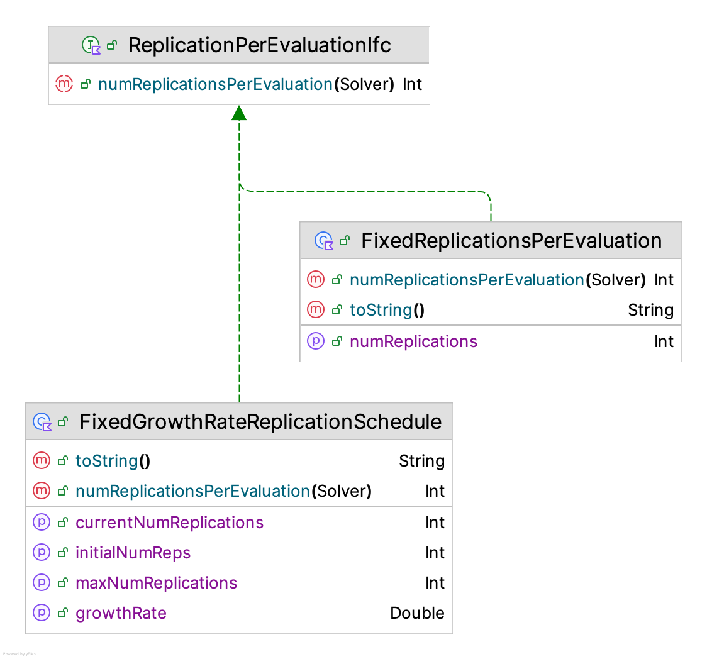
GenerateNeighborIfcinterface - This functional interface can be used by solvers to specify how to generate a neighbor relative to the supplied input. TheensureFeasibilityparameter should indicate if the generation method should ensure that the returned input map is feasible with respect the constraints of the problem.
fun interface GenerateNeighborIfc {
fun generateNeighbor(inputMap: InputMap, solver: Solver, ensureFeasibility: Boolean) : InputMap
}NeighborSelectorIfcinterface - This functional interface defines functions for selecting a neighbor (point) from a defined neighborhood represented as as set containing inputs. The supplied solver could be used to allow memory during the selection process.
fun interface NeighborSelectorIfc {
fun select(neighborhood: Set<InputMap>, solver: Solver) : InputMap
}SolutionQualityStoppingCriteriaIfcinterface - This functional interface represents functions that define when to stop the iterative process based on the quality of the solution. As previously noted, thesolutionQualityEvaluatorproperty will be used when the stopping criteria is evaluated within the main loop. Examples of different ways to stop the algorithms will be presented during the discussion of specific algorithms. ThesolutionQualityEvaluatorproperty provides the user with an approach to overriding the base behavior with different behavior rather than through sub-classing.
fun interface SolutionQualityEvaluatorIfc {
fun isStoppingCriteriaReached(solver: Solver): Boolean
}11.4.3 Miscellaneous Concepts in the Solver Class
This section presents some additional functionality within the Solver class that can be used when implementing specific algorithms. Figure 11.16 represents the properties associated with the Solver and StochasticSolver abstract base classes.
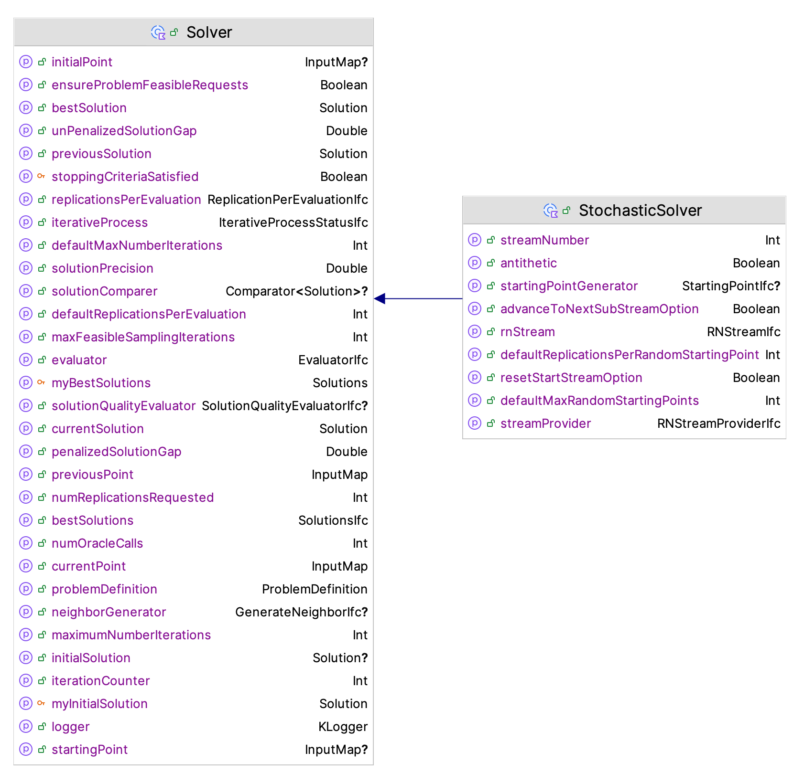
The primary functionality to understand is how the Solver class keeps track of the solutions that it produces. The most important property to understand how to use is the currentSolution property. For this property, it is useful to see how the current solution is defined:
var currentSolution: Solution = problemDefinition.badSolution()
protected set(value) {
// save the previous solution
previousSolution = field
// update the current solution
field = value
myBestSolutions.add(value)
}The current solution is initialized as a bad solution. Recall that a bad solution is a solution that is the worse possible solution for the problem. This can be retrieved via the ProblemDefinition class’s badSolution() function. The implementation of the solver algorithm should set the current solution during its search process. Notice that the previous solution is set during the assignment. This property provides access to the previous solution visited by the solver. Some solvers may compare the current solution with the previous solution as part of the stopping criteria evaluation process.
Also note that the myBestSolutions protected property is used to capture the newly assigned solution. The protected myBestSolutions property is an instance of the Solutions class. Figure 11.17 presents the SolutionsIfc interface and the Solutions class.
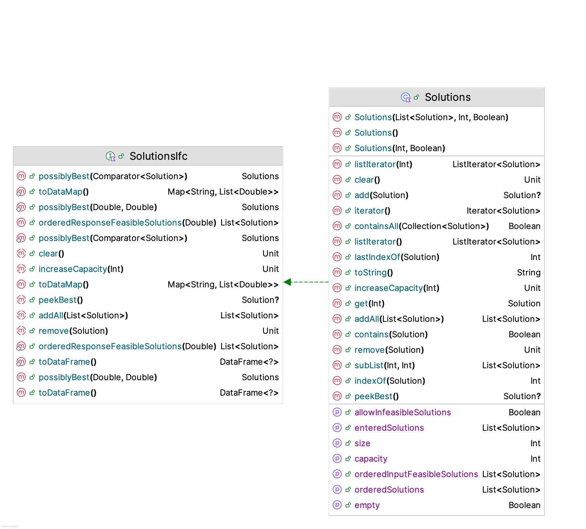
The SolutionsIfc implements the List<Solution> interface, which allows instances of the Solutions class to be treated as a list. The implementation of the Solutions class provides an ordering to the solutions based on the order in which they are added to the list and based on the value of the penalized objective function. The constructor of the Solutions class is presented in the following code.
class Solutions(
capacity: Int = defaultCapacity,
var allowInfeasibleSolutions: Boolean = false
) : SolutionsIfcConceptually, an instance of the Solutions class is like a cache, with a default capacity. It also controls whether it can store infeasible solutions. While the SolutionsIfc interface implements the List<Solution> interface, the implementation within the Solutions class allows mutability by providing specialized add(), addAll(), and remove() functions. Three functions facilitate extracting the best of the stored solutions.
peekBest(): Solution?- This function returns the solution with the lowest penalized objective function value.possiblyBest(comparator: Comparator<Solution>): Solutions- This function returns a list of solutions that are possibly the best using the supplied comparator.possiblyBest(level: Double = DEFAULT_CONFIDENCE_LEVEL,indifferenceZone: Double = 0.0): Solutions- This function returns solutions that could be considered best using a penalized objective function confidence interval comparator. The basic procedure is to select the smallest or largest solution as the best depending on the direction of the objective. Then, this procedure uses the best solution as the standard and compares all the solutions with it in a pair-wise manner. Any solutions that are considered not statistically different from the best solution are returned. The confidence interval is for each individual comparison with the best. Thus, to control the overall confidence, users will want to adjust the individual confidence interval level such that the overall confidence in the process is controlled as discussed in Section 5.7.2.
The property enteredSolutions returns the solutions in the order in which they occurred (i.e. the order in which they were added to the solutions). The properties orderedInputFeasibleSolutions and orderedSolutions return the solutions ordered by penalized objective function values.
In some situations, you may want to compare the effectiveness of different solvers for a problem. There are four properties of the Solver class that can help with this assessment process.
iterationCounter- TheiterationCounterproperty counts the number of iterations performed by a solver. Since some solvers may used additional stopping criteria, this property can be used to assess the total number of iterations performed.numOracleCalls- Each time a solver requests evaluations from the oracle, this property is incremented. It can be used to indicate how may simulation evaluations were performed. Since simulation evaluations can be computationally expensive, this property can help understand how efficient a solver is with respect to simulation evaluations.numReplicationsRequested- Similar to thenumOracleCallsproperty, this property totals the number of replications requested during the solver’s execution. This property can help understand how efficient a solver is in terms of its sampling.iterativeProcess- This property references the underlying iterative process via theIterativeProcessStatusIfcinterface. Figure 11.18 presents this interface. From the perspective of evaluating a solver’s efficiency, thebeginExecutionTimeandendExecutionTimeproperties can be used to compute the total time spent by the solver.
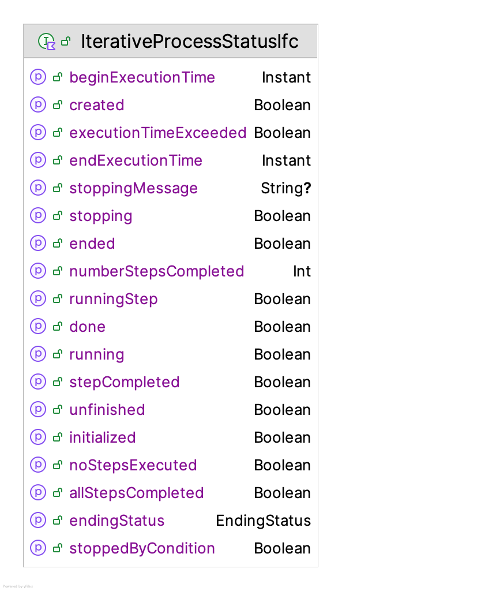
The final concept to discuss involves classes that assist with checking for convergence. Recall that algorithms will select a candidate point and evaluate that point via the simulation oracle. For many algorithms, the selection of the point is driven by a process that may converge such that the same point (or nearly the same point) is repeatedly selected. We may choose to stop the algorithm if the same point is repeatedly selected. The SolutionChecker class is designed to hold and test if its contained solutions are all the same. Figure 11.19 presents the SolutionChecker class and the SolutionEqualityIfc interfaces.
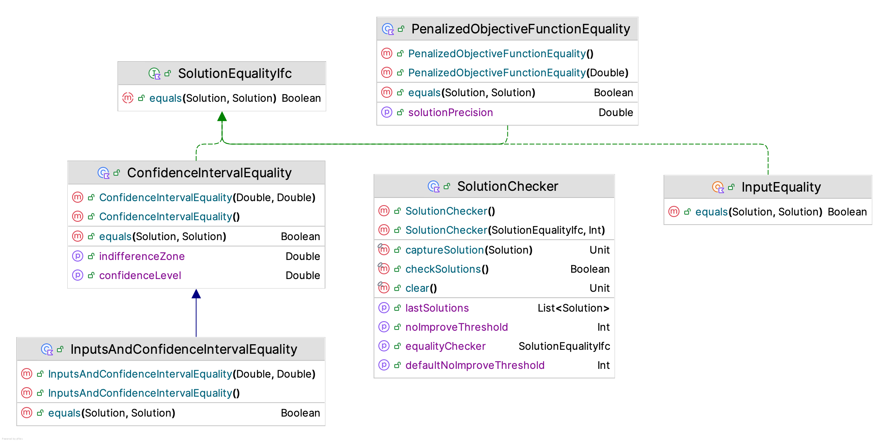
The purpose of the SolutionEqualityIfc interface is to provide a mechanism to check for the equality between two solutions. As can be noted in Figure 11.19 there are a variety of ways to define equality.
ConfidenceIntervalEquality- This class checks for equality between solutions based whether the confidence interval on the difference contains the indifference zone parameter. This is based on an approximate confidence interval on the difference between the unpenalized objective function values.PenalizedObjectiveFunctionEquality- This class checks if the penalized objective function values are within some specified precision. The uncertainty of the values is not taken into consideration.InputEqualityThis class indicates that two solutions are equal based only on the values of their inputs. If the solutions do not have the same inputs, then the penalized objective function is used to determine the ordering. Thus, two solutions are considered the same if they have the same input values, regardless of the value of the objective functions.InputsAndConfidenceIntervalEquality- This class checks for equality between solutions based whether the confidence interval on the difference contains the indifference zone parameter and whether the input variable values are the same.
The SolutionChecker class uses an instance of the SolutionEqualityIfc interface to check if the elements that it holds all test as equal. The constructor requires a threshold value that represents the number of solutions to check. When the solution checker contains the specified number of solutions, the user can call the checkSolutions() function, which will return true if the all the contained solutions test as equal. The specified threshold limit also specifies the capacity. The checker will only hold the specified number of solutions.
class SolutionChecker(
var equalityChecker: SolutionEqualityIfc = InputEquality,
noImproveThreshold: Int = defaultNoImproveThreshold
)An instance of the SolutionChecker class can be used as part of the logic for checking if the stopping criteria for the algorithm indicates if the algorithm should stop. Examples of this will be illustrated when covering specific algorithms.
11.5 Implemented Solvers
This section will overview the set of solvers provided within the KSL for use on simulation optimization problems. As shown in Figure 11.14, the following algorithms are available.
StochasticHillClimber- A stochastic hill climbing solver implements the idea of randomly moving through the search space. As new solutions are found, the current solution is updated if the next solution is better than the previous solution. Variations of stochastic hill climbing involve how to select points. It is one of the simplest algorithms to implement and it is still useful because in the limit, the algorithm will eventually visit the optimal solution.SimulatedAnnealing- Simulated annealing is a stochastic optimization algorithm that models the optimization process based on an analogy with a metallurgical annealing process. Popularized by (Kirkpatrick et al. 1983), simulated annealing has been widely used as a general purpose optimization methodology. For further background on simulation annealing, the interested reader should consider this on-line book.CrossEntropySolver- The cross-entropy method is a population based algorithm that is based on minimizing the cross-entropy between a target distribution and a parametric distribution. (De Boer et al. 2005) present a detailed tutorial on the cross-entropy method. The cross-entropy method is a general purpose meta-heuristic. While designed for deterministic optimization problems, the cross-entropy method has also been applied to stochastic optimization problems.RSplineSolver- The R-SPLINE method is presented in (Wang et al. 2013). This method is designed for integer-ordered (discrete) optimization problems. The overall theory guarantees convergence to locally optimal solutions.RandomRestartSolver- Many solvers require an initial starting point. The algorithm’s final solution may be sensitive to the choice of the initial starting point. A common strategy is to repeat the algorithm at different starting points and selecting the solution that is best across the starting points. This solver permits other solvers to be called repeatedly for randomly selected starting points.
The previously discussed framework should allow users to implement their own solvers. This section discusses some of the key features of the provided solvers, which may be of interest when using the solvers. Since the StochasticHillClimber solver was already discussed, it will not be discussed here. We will start with the classic simulated annealing algorithm.
11.5.1 Simulated Annealing
Simulated annealing is an optimization approach that is based on the concepts of Markov Chain Monte Carlo (MCMC) (see Section 9.3.4). As presented in Chapter 9, MCMC can be used to generate from arbitrarily specified multivariate distributions. Simulated annealing exploits the MCMC sampling process to find a mode of density function, \(f(x)\). This mode represents a point where \(f(x)\) is maximized. The process produces a sequence of density functions \(f_T(x) \propto [f(x)]^{1/T}\), where \(T\) denotes the temperature of the distribution. The sampling process produces a Markov chain such that the generated values \(x_k\) are from the distributions \(f_{T_k}\) for decreasing temperatures \(T_1, T_2, \dots\). As the temperatures decrease, the distributions converge to a highly peaked distribution, where the peak is at the maximum of the distribution, \(f\). The point causing the peak will also be the solution to the optimization problem. A key factor in this process is the cooling schedule that determines the temperature sequence.
As we can see from the constructor, the user must supply the problem definition, the evaluator and values for the key parameters of the annealing process:
temperatureConfiguration- How the starting temperature is chosen: either a fixed value you supply (TemperatureConfiguration.Fixed), or automatically calibrated by the solver itself (TemperatureConfiguration.AutoCalibrate) via a short random walk over the objective function landscape before the search begins.coolingSchedule- An implementation of theCoolingScheduleIfcinterface to determine the temperature at each iteration.stoppingTemperature- If the current temperature goes below this value, the algorithm will stop.
class SimulatedAnnealing @JvmOverloads constructor(
problemDefinition: ProblemDefinition,
evaluator: EvaluatorIfc,
val temperatureConfiguration: TemperatureConfiguration = TemperatureConfiguration.Fixed(defaultInitialTemperature),
var coolingSchedule: CoolingScheduleIfc = ExponentialCoolingSchedule(defaultInitialTemperature),
stoppingTemperature: Double = defaultStoppingTemperature,
maximumIterations: Int = defaultMaxNumberIterations,
replicationsPerEvaluation: ReplicationPerEvaluationIfc,
streamNum: Int = 0,
streamProvider: RNStreamProviderIfc = RNStreamProvider(),
name: String? = null
) : StochasticSolver(problemDefinition, evaluator, maximumIterations, replicationsPerEvaluation, streamNum, streamProvider, name) {TemperatureConfiguration is a sealed type with two variants. Fixed(temperature) uses a statically specified starting temperature. The AutoCalibrate(targetProbability, sampleSize) class option instead has the solver estimate a sensible starting temperature. During initialization it runs a short random walk of sampleSize steps over the problem, measures how much the objective function typically worsens on an uphill step, and picks a temperature that would accept such a step with roughly the value specified by targetProbability. This removes the guesswork of picking initialTemperature by hand, at the cost of some additional oracle calls before the real search begins.
Pseudo-code for the overall algorithm is as follows:
1. Initialize the solution and the temperature
2. While not converged
2.1. Generate a possible solution based on some probabilistic process
2.2. Calculate the change in the objective function
2.3. If an improvement or acceptance probability is met
2.3.1 accept the new solution
2.4 Reduce the temparture according the cooling schedule
3. Return the best solution foundA unique aspect of the simulated annealing process is that a solution that is not an improvement over the current solution can be accepted as the current solution. This permits exploration of the solution space. As the temperature decreases it becomes less likely that non-improving solutions will be accepted.
Although the algorithm will stop when the maximum number of iterations is met, implementations often use approaches that stop when consecutive objective function values are less than some tolerance, when the temperature becomes too small, or when the objective function value has not changed after a number of iterations.
The SimulatedAnnealing class implements the initializeIterations(), mainIteration(), and the isStoppingCriteriaSatisfied() functions. The mainIteration() function follows closely the outlined pseudo-code:
override fun mainIteration() {
// generate a random neighbor of the current solution
val nextPoint = nextPoint()
// evaluate the point to get the next solution
val nextSolution = requestEvaluation(nextPoint)
// calculate the cost difference
costDifference = nextSolution.penalizedObjFncValue - currentSolution.penalizedObjFncValue
// if the cost difference is negative, it is automatically an acceptance
if (costDifference < 0.0) {
// no need to generate a random variate
currentSolution = nextSolution
lastAcceptanceProbability = 1.0
logger.trace { "Solver: $name : solution improved to $nextSolution" }
} else {
// decide whether an increased cost should be accepted
val u = rnStream.randU01()
lastAcceptanceProbability = acceptanceProbability(costDifference, currentTemperature)
if (u < lastAcceptanceProbability) {
currentSolution = nextSolution
logger.trace { "Solver: $name : non-improving solution was accepted: $nextSolution" }
} else {
// stay at the current solution
logger.trace { "Solver: $name : rejected solution $nextSolution" }
}
}
// update the current temperature based on the cooling schedule
currentTemperature = coolingSchedule.nextTemperature(iterationCounter)
// capture the last solution
solutionChecker.captureSolution(currentSolution)
}The implementation uses the nextPoint() function from the StochasticSolver class to generate a neighbor of the current point. The new point is evaluated via the simulation oracle. Then, the objective function cost difference is computed. If there is an improvement, the next solution is automatically accepted as the current solution. If the proposed point caused an increase in the objective function, then the algorithm randomly generates a U(0,1) variate and compares it to the current acceptance probability. If the randomly generated value is less than the acceptance probability, the proposed point is accepted; otherwise, the current solution stays the same. The acceptance probability criteria is based on the Boltzman distribution and is a function of the objective function difference and the current value of the temperature.
fun acceptanceProbability(costDifference: Double, temperature: Double) : Double {
require(temperature > 0.0) { "The temperature must be positive" }
return if (costDifference <= 0.0) {
1.0
} else {
exp(-costDifference / temperature)
}
}The current temperature is computed based on a user definable function to implement the cooling schedule. The default implementation uses an exponential cooling schedule. The ksl.solvers.algorithms package also provides implementations for linear and logarithmic cooling schedules.
class ExponentialCoolingSchedule(
initialTemperature: Double,
val coolingRate: Double = defaultCoolingRate
) : CoolingSchedule (initialTemperature) {
init {
require(coolingRate > 0.0) { "Cooling rate must be positive" }
require(coolingRate < 1.0) { "Cooling rate must be less than 1.0" }
}
override fun nextTemperature(iteration: Int): Double {
require(iteration > 0) { "The iteration must be positive. It was $iteration." }
return initialTemperature * coolingRate.pow(iteration)
}
}The implementation of the SimulatedAnnealing class uses an instance of the previously discussed SolutionChecker class as part of the stopping criteria to check if the last 5 solutions are the same or if the temperature has become too small.
override fun isStoppingCriteriaSatisfied(): Boolean {
return solutionQualityEvaluator?.isStoppingCriteriaReached(this) ?:
(checkTemperature() || solutionChecker.checkSolutions())
}
private fun checkTemperature() : Boolean {
return currentTemperature < stoppingTemperature
}The parentheses around checkTemperature() || solutionChecker.checkSolutions() are essential: Kotlin’s ?: binds tighter than ||, so without them the no-improvement fallback would silently apply even when a solutionQualityEvaluator is set, stopping the search earlier than intended.
11.5.2 Cross Entropy
Similar in some respect to simulated annealing, the cross-entropy method is a stochastic optimization procedure that can be applied to both deterministic and stochastic optimization problems. The basic procedure is described in (De Boer et al. 2005) and can be characterized as a population based approach because it uses a sample of the search space to define an elite population. Cross-entropy uses rare-event simulation techniques to cause the parameters of a sampling distribution to converge to the desired solution of the related optimization problem. The cross-entropy method can be applied to optimization problems involving both continuous and discrete variables.
As presented in (Rubinstein and Kroese. 2017) the basic cross-entropy algorithm is as follows. The value \(\rho\) is called the elite percentage. The algorithm presented here is in terms of minimizing the objective function.
- Let \(k=0\) be the iteration counter. Initialize \(\hat{v}_0\) as the initial parameters of some density function \(f(\cdot;v_{k})\). Let \(N^e = \lceil \rho N \rceil\) be the size of the elite sample. Let \(N\) be the size of the cross-entropy population.
- Repeat
- Generate a sample \(\vec{X}_1, \vec{X}_2, \dots, \vec{X}_N\) from \(f(\cdot;v_{k-1})\).
- Calculate the performance \(G(\vec{X}_1), G(\vec{X}_2),\dots, G(\vec{X}_N)\).
- Order the performance from smallest to largest: \(G_{(1)}, G_{(2)},\dots, G_{(N)}\)
- Let \(\hat{\gamma}_k = G_{(N^e)}\)
- Use the same sample \(\vec{X}_1, \vec{X}_2, \dots, \vec{X}_N\) and solve a corresponding stochastic program, see (Rubinstein and Kroese. 2017) resulting in the estimated parameters of the sampling distribution \(\tilde{v}_k\).
- Update the parameters according to: \(\hat{v}_k = \alpha \tilde{v}_k + (1-\alpha) \hat{v}_{k-1}\).
- k = k + 1
- Until : a stopping criteria is met.
The stochastic program mentioned in step 2.5 of the algorithm is essentially the estimation of the parameters of \(f(\cdot;v_{k})\) via the maximum likelihood method based on the elite sample at each iteration. The elite sample consists of those \(\vec{X}_i\) such that \(G(\vec{X}_i) \ge \hat{\gamma}_k\). (Rubinstein and Kroese. 2017) recommend that the procedure be stopped if for some \(k \ge d\), say \(d=5\), when \(\hat{v}_k = \hat{v}_{k-1} = \cdots = \hat{v}_{k-d}\).
The choice of the density function \(f(\cdot;v_{k})\) is an important aspect of the algorithm because the parameters converge to the optimal solution of the associated optimization problem. Actually, similar to simulated annealing, the sequence of density functions \(f(\cdot;\hat{v}_{1}),f(\cdot;\hat{v}_{2}), \dots\) converges to a degenerate distribution assigning all probability to a single point \(x_k\), for which the objective function value is greater than or equal to \(\hat{\gamma}_k\). This point represents the solution to optimization problem. (De Boer et al. 2005) discuss different possibilities for the density function. The normal distribution is recommended for continuous optimization problems while the Bernoulli distribution has been used for discrete optimization problems. The critical aspect of this choice is the ability to easily compute the maximum likelihood estimates for the parameters of the distribution based on the elite sample.
The KSL implementation of the cross-entropy solver follows this general algorithm and builds from the StochasticSolver class. You must specify an instance of the CESampler class or accept the default of a sampler based on the multivariate normal distribution. The stopping criteria is based on providing an instance of the InputsAndConfidenceIntervalEquality class, which implements the SolutionEqualityIfc interface. This will test if \(\hat{v}_k = \hat{v}_{k-1} = \cdots = \hat{v}_{k-d}\) is true based on equal values of inputs and a comparison of the solutions based on confidence interval comparisons with the best solution.
class CrossEntropySolver @JvmOverloads constructor(
problemDefinition: ProblemDefinition,
evaluator: EvaluatorIfc,
streamNum: Int = 0,
streamProvider: RNStreamProviderIfc = RNStreamProvider(),
ceSampler: CESampler = CENormalSampler(problemDefinition),
maxIterations: Int = ceDefaultMaxIterations,
replicationsPerEvaluation: ReplicationPerEvaluationIfc,
solutionEqualityChecker: SolutionEqualityIfc = InputsAndConfidenceIntervalEquality(),
name: String? = null
) : StochasticSolver(problemDefinition,
evaluator, maxIterations,
replicationsPerEvaluation, streamNum,
streamProvider, name
)CESampler is an abstract class and is a settable property, not fixed at construction. A sampler is self-sufficient (it owns its own stream provider so it can be built and exercised standalone, outside of any solver); handing one to a CrossEntropySolver, either at construction or by later assignment, attaches it, adopting it onto the solver’s own stream provider on a stream distinct from the solver’s base stream. A sampler cannot be reattached while the solver is running, and its dimension must match the problem’s number of input variables.
The implementation generates the points \(\vec{X}_1, \vec{X}_2, \dots, \vec{X}_N\) via the function call ceSampler.sample(sampleSize()) within the mainIteration() function. The function sampleSize() computes the size, \(N\), of the cross-entropy population at each iteration. Then, the solver requests the evaluation of those points to produce the estimated performance of the objective function, \(G(\vec{X}_1), G(\vec{X}_2),\dots, G(\vec{X}_N)\).
override fun mainIteration() {
// Generate the cross-entropy sample population
val points = ceSampler.sample(sampleSize())
// Convert the points to be able to evaluate.
val inputs = problemDefinition.convertPointsToInputs(points)
// request evaluations for solutions
val evaluations = requestEvaluations(inputs)
val results = evaluations.values.toList()
if (results.isEmpty()) {
// Returning will cause no updating on this iteration.
// New points will be generated for another try on the next iteration.
return
}
// At least one result, so proceed with processing.
// Process the results to find the elites. This should fill myEliteSolutions.
myEliteSolutions = findEliteSolutions(results)
// convert elite solutions to points
val elitePoints = extractSolutionInputPoints(myEliteSolutions)
// update the sampler's parameters
ceSampler.updateParameters(elitePoints)
// specify the current solution
currentSolution = myEliteSolutions.first()
// capture the last solution
solutionChecker.captureSolution(currentSolution)
}The elite solutions are found via the call to findEliteSolutions() and the points associated with the elite solutions are used to update the parameters of the cross-entropy sampler. The best solution from the elite sample is used to represent the current solution. Just like the simulated annealing algorithm, the cross-entropy implementation uses an instance of the SolutionChecker class to remember the last \(d\) solutions and to stop when they have converged.
There are a number of key issues that must be implemented for the cross-entropy method.
- How large should the population (\(N\)) be?
- What should the elite percentage \(\rho\) be? Alternatively, what should be the size of the elite sample?
- What parametric family of distributions should be used for the sampling distribution?
- How to initialize the parameters of the sampling distribution?
- How to update the parameters of the sampling distribution?
- What should the value of the smoothing parameter \(\alpha\) be?
(De Boer et al. 2005) recommends that the size of the population, \(N\), be related to the dimension of the problem. If we let \(K\) be the number of parameters that need to be estimated for the sampling distribution, then (De Boer et al. 2005) recommends \(N=cK\), where \(c\) is a number between 1 and 10. For example, if the sampling distribution family is the normal distribution, we must estimate two parameters for each input variable, that is \((\mu_i, \sigma_i)\) for \(i=1,2,\dots, |I|\). Thus, \(K=2*|I|\). The KSL provides more flexibility with respect to determining the population size. As previously mentioned, the implementation provides the sampleSize() function, which can be customized by providing an implementation of the SampleSizeFnIfc functional interface.
fun interface SampleSizeFnIfc {
fun sampleSize(ceSolver: CrossEntropySolver): Int
}The base implementation will use a supplied sample size function or use the value of the ceSampleSize property.
fun sampleSize(): Int {
return sampleSizeFn?.sampleSize(this) ?: ceSampleSize
}The value of the ceSampleSize property is based on a user changeable default value or a recommended sample size based on the size of a sample needed to adequately estimate the quantile of a distribution.
var ceSampleSize: Int = minOf(recommendCESampleSize(), defaultMaxCESampleSize)
set(value) {
require(value >= defaultMinCESampleSize) { "The CE sample size must be >= $defaultMinCESampleSize" }
field = minOf(value, defaultMaxCESampleSize)
}The recommended cross-entropy sample size is based on the results presented in (Chen and Kelton 1999) and is implemented in the recommedCESampleSize() companion function.
fun recommendCESampleSize(
elitePct: Double = defaultElitePct,
ceQuantileConfidenceLevel: Double = defaultCEQuantileConfidenceLevel,
maxProportionHalfWidth: Double = defaultMaxProportionHalfWidth,
): Int The computed sample size may be sufficient to adequately estimate the quantile associated with the desired elite percentage using a desired quantile confidence level and an adjusted half-width bound for the associated quantile proportion. Defaults are provided for each of these parameters.
Lastly, the KSL cross-entropy implementation permits customization of the size of the elite sample. In some situations, you may want to vary the size of the elite sample as the algorithm progresses to improve estimation of the parameters of the sampling distribution. The KSL implementation provides the eliteSize() function for this purpose.
fun eliteSize(): Int {
return eliteSizeFn?.eliteSize(this) ?: maxOf(ceil(elitePct * ceSampleSize).toInt(),
defaultMinEliteSize)
}Note that a user can supply an instance of the EliteSizeIfc functional interface, which simply promises to compute the size of the elite sample.
fun interface EliteSizeIfc {
fun eliteSize(ceSolver: CrossEntropySolver): Int
}The implementation of the eliteSize() function will use a supplied function specified by the eliteSizeFn property or determine the size based on the specified elite percentage.
The questions associated with the sampling distribution and the updating of its parameters should be addressed by the choice of the implementation of the CESampler class chosen for the algorithm.
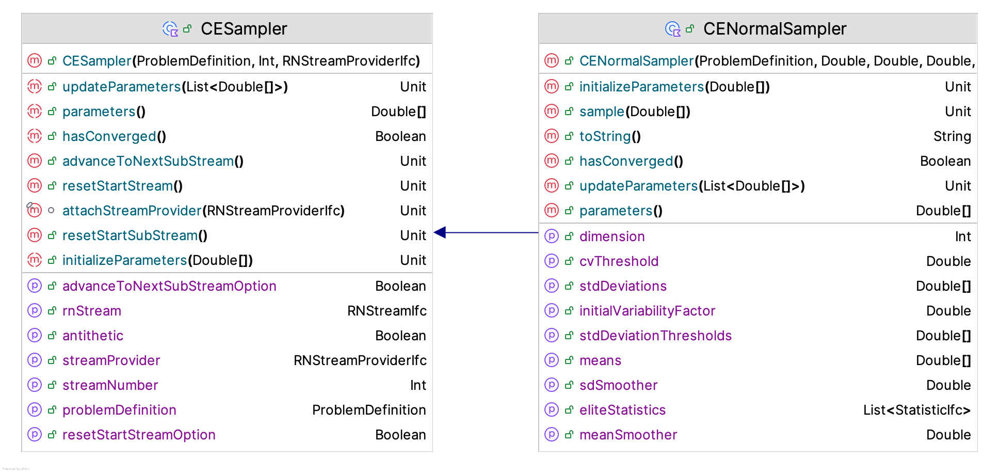
Figure 11.20 presents the CESampler abstract base class and the CENormalSampler class, which implements the sampling process based on the normal distribution. Note that the CESampler class implements the MVSampleIfc and RNStreamControlIfc interfaces. Thus, it can act as a multivariate sampler and can control the underlying random number stream. The four most relevant functions are:
updateParameters(elites: List<DoubleArray>)- This function should update the parameters based on the points from the elite sample (held in a list of double arrays).parameters(): DoubleArray- This function returns the current parameter values.initializeParameters(values: DoubleArray)- This function is used to specify the initial values of the parameters.hasConverged(): Boolean- This function should return true if the parameters of the underlying sampling distribution are considered converged.
The initialization of the parameters of the cross-entropy sampling distribution is interesting because we do not have any knowledge from an elite sample when the algorithm starts. In essence, this is like determining the starting point of the optimization problem. For the CENormalSampler class, the implementation uses a randomly generated point in the solution space as the specification of the means of the multivariate normal distribution. Then, the input range of each point is used to approximate the initial values of the standard deviations for the distributions. The standard approximation for the standard deviation as a function of the range (\(R\)) is used: \(\sigma = R/4\). Thus, input variables that have a wider range of possible values start off with a higher variance parameter. The means associated with the normal distribution will converge to the recommended solution, while the standard deviations will continue to get closer and closer to zero as the process converges to a degenerate distribution.
As noted in Figure 11.20, the CENormalSampler class requires the specification of the smoothing constant, \(\alpha\), for both the mean and the standard deviation parameters. The user also has the ability to specify more or less variability via the initialVariabilityFactor property, which will be used to multiply the approximated initial values for the standard deviation parameters. Its default value is 1.0. The user must also specify the cvThreshold parameter value. This threshold is used to test if the parameters have converged. The default implementation computes the coefficient of variation of the parameters and if the coefficient of variation goes below this threshold, then the parameter is consider to have converged. If all the parameters have converged, then the hasConverged() function will return true. The default coefficient of variation threshold is set to \(0.03\).
Updating the parameters of the normal sampler is easy. We can just use the sample average and sample standard deviation of the elite points associated with the elite sample as the new estimates, and then smooth those estimate using the smoothing constants. Based on the recommendations from (De Boer et al. 2005), the default smoothing constants are set to \(0.85\). The KSL only supplies the CENormalSampler because testing has indicated that it performs okay for both discrete and continuous problems. Users can implement the defined interfaces if they require other parametric distributions.
11.5.3 R-SPLINE
This section will present an overview of the R-SPLINE algorithm discussed in (Wang et al. 2013). Since that paper has substantial details of the algorithm, the emphasis in this presentation will be on how the ksl.simopt package facilitates its implementation. As previously noted, the R-SPLINE algorithm is for discrete integer ordered optimization problems. If the user attempts to solve a problem that is not integer ordered, the R-SPLINE implementation will report an illegal argument exception for the problem definition parameter.
As a StochasticSolver, the RSplineSolver class requires a specification of the replications per evaluation and an implementation of a stopping criteria. Similar to the cross-entropy method, the R-SPLINE implementation also uses the InputsAndConfidenceIntervalEquality class for checking it the algorithm should stop. This is different than the approaches recommended in (Wang et al. 2013). Unique to the R-SPLINE algorithm is that the algorithm does not use a fixed replication sampling mechanism but rather the number of replications per evaluation will grow as the number of iterations increases. This is an important aspect of the theory behind the algorithm to justify claims that in the limit the algorithm will converge to local neighborhood optimal solutions.
class RSplineSolver @JvmOverloads constructor(
problemDefinition: ProblemDefinition,
evaluator: EvaluatorIfc,
maximumIterations: Int = defaultMaxNumberIterations,
replicationsPerEvaluation: FixedGrowthRateReplicationSchedule,
solutionEqualityChecker: SolutionEqualityIfc = InputsAndConfidenceIntervalEquality(),
streamNum: Int = 0,
streamProvider: RNStreamProviderIfc = RNStreamProvider(),
name: String? = null
) : StochasticSolver(problemDefinition, evaluator, maximumIterations,
replicationsPerEvaluation, streamNum, streamProvider, name)A second constructor is also available for cases where building a FixedGrowthRateReplicationSchedule by hand isn’t necessary: it accepts initialNumReps, sampleSizeGrowthRate, and maxNumReplications directly and constructs the schedule for you.
The R-SPLINE algorithm combines three ideas: 1) piece-wise linear interpolation search, 2) discrete neighborhood enumeration, and 3) retrospective solving of a sequence of sample path problems with an increasing sample size using the previous solution as the starting point for the next problem. (Wang et al. 2013) specifies algorithm 1 of R-SPLINE as
- Set \(X^{*}_{0} = x_0\)
- for \(k=1,2,\dots\)
- \(X^{*}_{k} = SPLINE(X^{*}_{k-1}, m_k, b_k)\)
- end for
The sequences \(m_k\) and \(b_k\), specify the sample size for the \(k^{th}\) iteration and \(b_k\) is the limit on the number of simulation evaluation calls. As you can see the mainIteration() function represents this algorithm. (Wang et al. 2013) recommends \(m_{k+1} = \lceil 1.1m_k \rceil\), which increases the sample size by 10 percent for each iteration.
override fun mainIteration() {
// The initial (current) solution is randomly selected or specified by the user.
// It will be the current solution until beaten by the SPLINE search process.
// Call SPLINE for the next solution using the current sample size (m_k) and
// current SPLINE oracle call limit (b_k).
val splineSolution = spline(
currentSolution,
rSPLINESampleSize, splineCallLimit
)
currentSolution = splineSolution
// capture the last solution
solutionChecker.captureSolution(currentSolution)
}The SPLINE function is fairly complex. Given a specification of the sample size for the iteration, \(m_k\), the supplied solution may need additional replications evaluated, which will result in a new estimated solution. Then, an inner loop of the spline searching process commences. This involves two phases. First, a search of a piece-wise linear interpolation of the objective function and then a search of the neighborhood resulting from the piece-wise linear interpolation search. The details of this process can be found as algorithm 2 in (Wang et al. 2013).
private fun spline(
initSolution: Solution,
sampleSize: Int,
splineCallLimit: Int
): Solution {
require(initSolution.isInputFeasible()) { "The initial solution to the SPLINE function must be input feasible!" }
// use the initial solution as the new (starting) solution for the line search (SPLI)
var newSolution = if (sampleSize > initSolution.count){
requestEvaluation(initSolution.inputMap, sampleSize)
} else {
initSolution
}
// save the starting solution
val startingSolution = newSolution
// initialize the number of oracle calls
var splineOracleCalls = 0
for(i in 1..splineCallLimit){
// perform the line search to get a solution based on the new solution
val spliResults = searchPiecewiseLinearInterpolation(newSolution, sampleSize)
// SPLI cannot cause harm
val neStartingSolution = if (compare(spliResults.solution, newSolution) <= 0){
spliResults.solution
} else {
newSolution
}
// search the neighborhood starting from the SPLI solution
val neSearchResults = neighborhoodSearch(neStartingSolution, sampleSize)
splineOracleCalls = splineOracleCalls + spliResults.numOracleCalls + neSearchResults.numOracleCalls
newSolution = neSearchResults.solution
// if the candidate solution and the NE search starting solution are the same, we can stop
if ((neStartingSolution == neSearchResults.solution) || compare(neStartingSolution, neSearchResults.solution) == 0) {
break
}
}
// Check if the starting solution is better than the solution from the SPLINE search.
return if (compare(startingSolution, newSolution) < 0) {
startingSolution
} else {
// The new solution might be better, but it might be input-infeasible.
if (newSolution.isInputFeasible()) {
newSolution
} else {
// not feasible, go back to the last feasible solution
startingSolution
}
}
}The piece-wise linear search process proceeds roughly as follows. Given a point, \(x\in\mathbb{R}^d \setminus \mathbb{Z}^d\) in the space, consider the \(2^d\) integer points that are the vertices of the hyper-cube that contains \(x\). The algorithm chooses \(d+1\) vertices so that the convex hull of the points form a simplex that contains \(x\). An interpolation of the objective function evaluated at the points of the simplex provides a linear interpolation function from which an estimate of the gradient associated with the objective function can be computed. The gradient is used to determine a direction and then a linear line search is used to proceed in the specified direction.
This process continues until no improvement can be made in the direction of search at which point the piece-wise linear search process returns with the last point associated with its search. Then, an Von Neumann neighborhood is found around the the returned point and the neighborhood is enumerated and the best solution from the enumeration process returned. If the enumeration solution is the same as the solution from the piece-wise linear search process then the SPLINE process stops; otherwise, another SPLINE cycle occurs. The cycles will stop when the number of spline calls is reached or the SPLINE search and the enumeration search are the same. An important aspect of the gradient estimation process is that common random numbers are used when evaluating the points that form the simplex around the proposed point. To implement these procedures the KSL provides the following functions.
searchPiecewiseLinearInterpolation(solution: Solution, sampleSize: Int): SPLIResults- This is essentially algorithm 4 of (Wang et al. 2013).piecewiseLinearInterpolation(solution: Solution,sampleSize: Int,perturbation: Double): PLIResults- This is algorithm 3 of (Wang et al. 2013).perturb(point: DoubleArray, perturbation: Double): DoubleArray- This is the PERTURB function mentioned in (Wang et al. 2013).neighborhoodSearch(solution: Solution,sampleSize: Int): NESearchResults- This function implements the enumeration and search of the neighborhood defined in the SPLINE process.
11.5.4 Randomized Restart Solvers
In general, optimization algorithms rely on a starting point to initialize the search process. The performance of the algorithm may be sensitive to the choice of the starting point, which may cause the search process to converge to a local optimal or to limit the exploration of the search space. A random restart solver is a solver that starts another solver using different randomly generated starting points. RandomRestartSolver has two public constructors. The one shown here is the historical, sequential form: the supplied solver is reused, run to completion once per restart.
class RandomRestartSolver(
restartingSolver: Solver,
maxNumRestarts: Int = defaultMaxRestarts,
streamNum: Int = 0,
streamProvider: RNStreamProviderIfc = RNStreamProvider(),
name: String? = null
)A second constructor builds restarts from a SolverFactoryIfc instead of a single solver instance, and can run them concurrently: with concurrentRestarts > 1, up to that many restarts run at the same time, each on its own worker with its own solver instance and its own private evaluation resources, since restarts are statistically independent of one another. Each restart’s starting point and simulation streams are pre-drawn before launch, so results are reproducible regardless of which worker finishes first. An optional confirmation stage can re-evaluate the best candidates from the completed restarts under common random numbers before reporting a final winner—the same screening idea from Section 5.7.2, applied here to pick among restarts rather than among designed-experiment scenarios. The mechanics of setting up concurrent restarts (the solver and evaluator factories, stream-block sizing, the confirmation stage’s parameters) are covered in the KSL developer guide.
The mainIterations() function is very straightforward. Since we want independent solutions, we clear a solution cache if it is being used. Then, a new starting point is generated and assigned as the starting point for the solver. The solver is executed for all of its iterations (or until its stopping criteria are met). The best solution from the execution of the solver is captured.
override fun mainIteration() {
if (isConcurrentMode) {
concurrentMainIteration()
} else {
sequentialMainIteration()
}
}
private fun sequentialMainIteration() {
// clear the evaluator cache between randomized runs, but allow caching during the run itself
// this will cause new replications to be generated
if (clearCacheBetweenRuns) {
evaluator.cache?.clear()
}
// Note: each restart's penalty ramp begins fresh because every solver run resets
// the shared evaluator's evaluation clock in Solver.initializeIterations —
// matching concurrent mode, where each restart's private evaluator starts its
// own clock. The evaluator's cumulative statistics counters are unaffected.
// The first run honors a user-supplied starting point (the documented contract,
// matching concurrent mode's restart 0); every other restart draws a random
// input-feasible point.
val startPoint = if (iterationCounter == 1 && startingPoint != null) {
startingPoint!!
} else {
startingPoint()
}
restartingSolver.startingPoint = startPoint
logger.debug { "Starting a new randomized run at point: ${startPoint.inputValues.joinToString()}" }
// run the solver until it finds a solution
restartingSolver.runAllIterations()
numOracleCalls = numOracleCalls + restartingSolver.numOracleCalls
numReplicationsRequested = numReplicationsRequested + restartingSolver.numReplicationsRequested
// get the best solution from the solver run
val bestSolution = restartingSolver.bestSolution
logger.debug { "Best solution found from the solver run: ${bestSolution.asString()}" }
currentSolution = bestSolution
logger.debug { "Current best: ${currentSolution.asString()}" }
}Thus, repeated executions of the solver start with a different starting point and may produced different solutions. In the next section, we will illustrate how to set up solvers to solve an optimization problem.
11.6 Using a Solver on a Problem
Section 11.2.5 presented how to define a problem definition for a reorder point, reorder quantity inventory system. This section will use that problem definition to setup a cross-entropy solver and a random restart solver for optimizing the problem. Recall that the problem is to minimize the inventory ordering and holding costs subject to a fill-rate constraint. To use a solver, we need at a minimum the following:
- an instance of the
ProblemDefinitionclass - an instance of something that implements the
ModelBuilderIfcinterface - an instance of the
EvaluatorIfcinterface
The companion object of the Solver class provides factory functions that facilitate the creation of the available solvers with default configurations. The factory functions will create an evaluator for executing the model that is configured to run the simulations locally (within the same execution thread) and is configured to use a MemorySolutionCache() to store and reuse solutions requested by the solver.
11.6.1 Illustrating the Cross-Entropy Solver
This section illustrates how to setup and run the cross-entropy solver for the reorder point, reorder quantity inventory model. Let’s start with a review of the factory function that facilitates the creation of a cross-entropy solver. The factory function requires a problem definition, something that will build the model, and the necessary parameters to construct the cross-entropy solver.
fun createCrossEntropySolver(
problemDefinition: ProblemDefinition,
modelBuilder: ModelBuilderIfc,
ceSampler: CESampler? = null,
startingPoint: MutableMap<String, Double>? = null,
maxIterations: Int = CrossEntropySolver.ceDefaultMaxIterations,
replicationsPerEvaluation: Int = defaultReplicationsPerEvaluation,
solutionCache: SolutionCacheIfc = MemorySolutionCache(),
simulationRunCache: SimulationRunCacheIfc? = null,
experimentRunParameters: ExperimentRunParametersIfc? = null,
streamNum: Int = 0,
streamProvider: RNStreamProviderIfc = RNStreamProvider(),
name: String? = null,
parallelOptions: ParallelEvaluationOptions = ParallelEvaluationOptions()
): CrossEntropySolver {
val evaluator = Evaluator.createProblemEvaluator(
problemDefinition = problemDefinition, modelBuilder = modelBuilder, solutionCache = solutionCache,
simulationRunCache = simulationRunCache, experimentRunParameters = experimentRunParameters,
parallelOptions = parallelOptions
)
// The default sampler owns its own provider; CrossEntropySolver attaches whatever sampler it
// is given onto the solver's provider (on a stream distinct from the solver's base stream).
val sampler = ceSampler ?: CENormalSampler(problemDefinition)
val ce = CrossEntropySolver(
problemDefinition = problemDefinition,
evaluator = evaluator,
streamNum = streamNum,
streamProvider = streamProvider,
ceSampler = sampler,
maximumIterations = maxIterations,
replicationsPerEvaluation = replicationsPerEvaluation,
name = name
)
if (startingPoint != null) {
ce.startingPoint = problemDefinition.toInputMap(startingPoint)
}
return ce
}Notice the factory function allows passing through key parameters for both the construction of the evaluator and the solver. The evaluator is setup with the problem definition and the model builder. The rest of the parameters for the creation of the evaluator use the defaults.
The following code defines an object that implements the ModelBuilderIfc interface. This code is very similar to the code used to create models throughout the textbook. For this simple example, there will not be a need to use the parameters passed to the build() function. One important item to note is that the settings of the run parameters (length of warm up and the length of the replications) will stay as specified in this function; however, these base settings could be changed during the building process. The solver architecture via the previously described EvaluationRequest class only permits the changing of the number of replications. So, once a model is built, and provided to the solver, its basic configuration cannot be changed except for inputs and number of replications.
object BuildRQModel : ModelBuilderIfc {
override fun build(
modelConfiguration: Map<String, String>?,
experimentRunParameters: ExperimentRunParametersIfc?
): Model {
val reorderQty: Int = 2
val reorderPoint: Int = 1
val model = Model("RQInventoryModel")
val rqModel = RQInventorySystem(model, reorderPoint, reorderQty, "Inventory")
rqModel.initialOnHand = 0
rqModel.demandGenerator.initialTimeBtwEvents = ExponentialRV(1.0 / 3.6)
rqModel.leadTime.initialRandomSource = ConstantRV(0.5)
model.lengthOfReplication = 20000.0
model.lengthOfReplicationWarmUp = 10000.0
model.numberOfReplications = 40
return model
}
}Now we can construct the solver and run it. The following code provides a function for constructing and running the iterations of a solver and for printing out results from the optimization process.
fun runCESolver(
simulationRunCache: SimulationRunCacheIfc? = null,
experimentRunParameters: ExperimentRunParametersIfc? = null
) {
val problemDefinition = makeRQInventoryModelProblemDefinition()
val modelBuilder = BuildRQModel
val solver = Solver.Companion.createCrossEntropySolver(
problemDefinition = problemDefinition,
modelBuilder = modelBuilder,
startingPoint = null,
maxIterations = 100,
replicationsPerEvaluation = 50,
simulationRunCache = simulationRunCache,
experimentRunParameters = experimentRunParameters
)
val tracker = ConsoleSolverStateTracker(solver)
tracker.startTracking()
solver.runAllIterations()
println()
println(solver)
println()
println("Solver Results Summary:")
solver.printResults()
println()
println("Final (Best) Solution:")
println(solver.bestSolution.asString())
println()
println("Approximate screening:")
val solutions = solver.bestSolutions.possiblyBest()
println(solutions)
println("Dataframe")
val df = solver.bestSolutions.toDataFrame()
df.schema().print()
df.print()
}The required problem definition is supplied by the previously reviewed makeRQInventoryModelProblemDefinition() function, the model builder is supplied by the object that builds the model.
Rather than writing a custom function to react to a solver’s progress, you can use one of the pre-built trackers in the ksl.simopt.solvers.trackers package. A tracker is a small object that attaches itself as an observer to a solver and reacts automatically to the two kinds of events that every Solver emits: an iteration event, carrying a SolverStateSnapshot (the iteration number, the cumulative number of oracle calls and replications requested so far, and the current and best solutions found so far), and a life cycle event, carrying a SolverStatus (INITIALIZED, STARTED, COMPLETED, or ERROR). All of the built-in trackers extend AbstractSolverStateTracker, which handles attaching to and detaching from these two emitters, so that a specific tracker only needs to say what it wants to do with each snapshot or status change.
The ksl.simopt.solvers.trackers package currently provides:
ConsoleSolverStateTracker- prints each snapshot and life cycle transition to the console. This is the tracker used in the example.CsvSolverStateTracker- appends each snapshot to a CSV file, managing the file across multiple solver runs.DataFrameSolverStateTracker- accumulates snapshots in memory and compiles them into a KotlinDataFramefor further analysis.
Some solvers, such as the RandomRestartSolver class, are really two solvers working together: an outer solver that manages the restarts and an inner solver that performs the search between restarts. For these composite solvers, the package provides nested counterparts, the NestedConsoleSolverStateTracker, NestedCsvSolverStateTracker, and NestedDataFrameSolverStateTracker classes, each of which tracks the outer and inner solver together. The illustration of simulated annealing with random restarts later in this chapter uses a nested tracker. Consult the KSL developer guide for ksl.simopt for further details on all six trackers.
Using a tracker takes two lines. Construct the tracker around an already-constructed solver, and tell it to start tracking before running the solver’s iterations:
val tracker = ConsoleSolverStateTracker(solver)
tracker.startTracking()
solver.runAllIterations()The startTracking() function attaches the tracker to the solver’s iterationEmitter and lifeCycleEmitter; calling it again on an already-tracking tracker has no effect. A matching stopTracking() function detaches the tracker if you want to silence it before the solver finishes. A solver only builds and emits a snapshot when something is listening, so attaching a tracker is also how you see intermediate iterations. Without one attached, only the final results are available once runAllIterations() returns. The frequency of iteration snapshots is controlled by the solver’s snapShotFrequency property (default 1, i.e. every iteration).
The cross-entropy solver is constructed and all the iterations of the solver are executed. Note that even though the maximum number of iteration was specified as 100, the actual number of iterations may be less due to the stopping criteria. Solvers have a useful toString() method and also provide functions and properties to examine the solutions.
Let’s take a look at some of the emitted solutions.
>>> SOLVER INITIALIZED: Baseline captured.
[Iter: 0 | Oracle: 0] EstObj: 1.79769E+308 | PenObj: 1.79769E+308 | Cur: (Inventory:Item.initialReorderQty, Inventory:Item.initialReorderPoint)=(-2147483646.000, -2147483646.000) | Best: (Inventory:Item.initialReorderQty, Inventory:Item.initialReorderPoint)=(-2147483646.000, -2147483646.000)
>>> SOLVER STARTED: Beginning iterations...
[Iter: 1 | Oracle: 34] EstObj: 13.7967 | PenObj: 13.7967 | Cur: (Inventory:Item.initialReorderQty, Inventory:Item.initialReorderPoint)=(1.000, 11.000) | Best: (Inventory:Item.initialReorderQty, Inventory:Item.initialReorderPoint)=(1.000, 11.000)
[Iter: 2 | Oracle: 67] EstObj: 9.06001 | PenObj: 9.06001 | Cur: (Inventory:Item.initialReorderQty, Inventory:Item.initialReorderPoint)=(10.000, 5.000) | Best: (Inventory:Item.initialReorderQty, Inventory:Item.initialReorderPoint)=(10.000, 5.000)
[Iter: 3 | Oracle: 101] EstObj: 9.06001 | PenObj: 9.06001 | Cur: (Inventory:Item.initialReorderQty, Inventory:Item.initialReorderPoint)=(6.000, 9.000) | Best: (Inventory:Item.initialReorderQty, Inventory:Item.initialReorderPoint)=(10.000, 5.000)
[Iter: 4 | Oracle: 136] EstObj: 9.06001 | PenObj: 9.06001 | Cur: (Inventory:Item.initialReorderQty, Inventory:Item.initialReorderPoint)=(27.000, 2.000) | Best: (Inventory:Item.initialReorderQty, Inventory:Item.initialReorderPoint)=(10.000, 5.000)
[Iter: 5 | Oracle: 170] EstObj: 9.06001 | PenObj: 9.06001 | Cur: (Inventory:Item.initialReorderQty, Inventory:Item.initialReorderPoint)=(21.000, 1.000) | Best: (Inventory:Item.initialReorderQty, Inventory:Item.initialReorderPoint)=(10.000, 5.000)
[Iter: 6 | Oracle: 203] EstObj: 9.06001 | PenObj: 9.06001 | Cur: (Inventory:Item.initialReorderQty, Inventory:Item.initialReorderPoint)=(3.000, 8.000) | Best: (Inventory:Item.initialReorderQty, Inventory:Item.initialReorderPoint)=(10.000, 5.000)
[Iter: 7 | Oracle: 238] EstObj: 8.45271 | PenObj: 8.45271 | Cur: (Inventory:Item.initialReorderQty, Inventory:Item.initialReorderPoint)=(15.000, 2.000) | Best: (Inventory:Item.initialReorderQty, Inventory:Item.initialReorderPoint)=(15.000, 2.000)We see that the solution is improving over the first few iterations. As shown for iterations 30 through 40, we see that the last 5 solutions are the same and thus the cross-entropy solver will stop.
[Iter: 30 | Oracle: 927] EstObj: 4.61628 | PenObj: 4.61628 | Cur: (Inventory:Item.initialReorderQty, Inventory:Item.initialReorderPoint)=(6.000, 3.000) | Best: (Inventory:Item.initialReorderQty, Inventory:Item.initialReorderPoint)=(4.000, 3.000)
[Iter: 31 | Oracle: 950] EstObj: 4.61628 | PenObj: 4.61628 | Cur: (Inventory:Item.initialReorderQty, Inventory:Item.initialReorderPoint)=(5.000, 3.000) | Best: (Inventory:Item.initialReorderQty, Inventory:Item.initialReorderPoint)=(4.000, 3.000)
[Iter: 32 | Oracle: 974] EstObj: 4.61628 | PenObj: 4.61628 | Cur: (Inventory:Item.initialReorderQty, Inventory:Item.initialReorderPoint)=(4.000, 3.000) | Best: (Inventory:Item.initialReorderQty, Inventory:Item.initialReorderPoint)=(4.000, 3.000)
[Iter: 33 | Oracle: 997] EstObj: 4.61628 | PenObj: 4.61628 | Cur: (Inventory:Item.initialReorderQty, Inventory:Item.initialReorderPoint)=(5.000, 3.000) | Best: (Inventory:Item.initialReorderQty, Inventory:Item.initialReorderPoint)=(4.000, 3.000)
[Iter: 34 | Oracle: 1019] EstObj: 4.61628 | PenObj: 4.61628 | Cur: (Inventory:Item.initialReorderQty, Inventory:Item.initialReorderPoint)=(4.000, 3.000) | Best: (Inventory:Item.initialReorderQty, Inventory:Item.initialReorderPoint)=(4.000, 3.000)
[Iter: 35 | Oracle: 1040] EstObj: 4.61628 | PenObj: 4.61628 | Cur: (Inventory:Item.initialReorderQty, Inventory:Item.initialReorderPoint)=(5.000, 3.000) | Best: (Inventory:Item.initialReorderQty, Inventory:Item.initialReorderPoint)=(4.000, 3.000)
[Iter: 36 | Oracle: 1059] EstObj: 4.61628 | PenObj: 4.61628 | Cur: (Inventory:Item.initialReorderQty, Inventory:Item.initialReorderPoint)=(4.000, 3.000) | Best: (Inventory:Item.initialReorderQty, Inventory:Item.initialReorderPoint)=(4.000, 3.000)
[Iter: 37 | Oracle: 1077] EstObj: 4.61628 | PenObj: 4.61628 | Cur: (Inventory:Item.initialReorderQty, Inventory:Item.initialReorderPoint)=(4.000, 3.000) | Best: (Inventory:Item.initialReorderQty, Inventory:Item.initialReorderPoint)=(4.000, 3.000)
[Iter: 38 | Oracle: 1093] EstObj: 4.61628 | PenObj: 4.61628 | Cur: (Inventory:Item.initialReorderQty, Inventory:Item.initialReorderPoint)=(4.000, 3.000) | Best: (Inventory:Item.initialReorderQty, Inventory:Item.initialReorderPoint)=(4.000, 3.000)
[Iter: 39 | Oracle: 1113] EstObj: 4.61628 | PenObj: 4.61628 | Cur: (Inventory:Item.initialReorderQty, Inventory:Item.initialReorderPoint)=(4.000, 3.000) | Best: (Inventory:Item.initialReorderQty, Inventory:Item.initialReorderPoint)=(4.000, 3.000)
[Iter: 40 | Oracle: 1129] EstObj: 4.61628 | PenObj: 4.61628 | Cur: (Inventory:Item.initialReorderQty, Inventory:Item.initialReorderPoint)=(4.000, 3.000) | Best: (Inventory:Item.initialReorderQty, Inventory:Item.initialReorderPoint)=(4.000, 3.000)The toString() function prints out the final results of the solver and its basic parameter settings. It took about 8 minutes of execution time for the solver to converge, with a total of 1129 design points evaluated and 56,450 replications requested, with 23,800 executed and 32,650 coming from the cache.
=================================================================
SOLVER RESULTS
=================================================================
Solver : ID_48
Problem : InventoryProblem
Termination : Stopping Criteria Satisfied
Execution Time : 460816ms
--- Algorithmic Budget ---
Total Iterations : 40
--- Evaluator Usage ---
Evaluator Invocations : 40
Design Points Evaluated : 1129
Total Replications Req. : 56450
├─ Executed by Oracle : 23800
└─ Satisfied by Cache : 32650
Cache Savings : 57.8% of simulation budget
--- Trajectory Summary ---
[INITIAL POINT]
Not Applicable (Population-based or not provided)
[FINAL/CURRENT POINT]
Solution(id = 467, status = Valid, evaluation = 40)
Objectives:
Estimated = 4.616278083730662
Penalized = 4.616278083730662
Granular = 4.616278083730662
Penalty = 0.0
Estimated Objective Function Details:
Name = Inventory:Item:OrderingAndHoldingCost
Average = 4.616278083730662
Variance = 4.7606867543817605E-5
Count = 50.0
95%CI = [4.614317189939786, 4.618238977521537]
Inputs:
Inventory:Item.initialReorderQty = 4.0
Inventory:Item.initialReorderPoint = 3.0
Response Constraints:
[SATISFIED] Inventory:Item:FillRate | LHS: 0.9604 >= RHS: 0.9500 | Viol: 0.0000 | (N=50.0, SE= 0.0002, 95% HW= 0.0004)
[BEST POINT FOUND]
Solution(id = 467, status = Valid, evaluation = 23)
Objectives:
Estimated = 4.616278083730662
Penalized = 4.616278083730662
Granular = 4.616278083730662
Penalty = 0.0
Estimated Objective Function Details:
Name = Inventory:Item:OrderingAndHoldingCost
Average = 4.616278083730662
Variance = 4.7606867543817605E-5
Count = 50.0
95%CI = [4.614317189939786, 4.618238977521537]
Inputs:
Inventory:Item.initialReorderQty = 4.0
Inventory:Item.initialReorderPoint = 3.0
Response Constraints:
[SATISFIED] Inventory:Item:FillRate | LHS: 0.9604 >= RHS: 0.9500 | Viol: 0.0000 | (N=50.0, SE= 0.0002, 95% HW= 0.0004)
=================================================================The best solution found appears to be at a reorder point of 3 and a reorder quantity of 4, with a total cost of 4.62. In addition, the fill rate constraint is estimated as 0.9604 and its constraint is not violated. Notice that confidence intervals on the solutions are provided. The output from the code for screening indicates that the found solution is likely the best observed solution because the other solutions are screened out. We have no real guarantee that there is some point that was not observed that could be better.
println("Approximate screening:")
val solutions = solver.bestSolutions.possiblyBest()
println(solutions)Approximate screening:
Solutions:
totalSolutions = 1
capacity = 10
allowInfeasibleSolutions = false
orderedSolutions:
Solution(id = 467, status = Valid, evaluation = 23)
Objectives:
Estimated = 4.616278083730662
Penalized = 4.616278083730662
Granular = 4.616278083730662
Penalty = 0.0
Estimated Objective Function Details:
Name = Inventory:Item:OrderingAndHoldingCost
Average = 4.616278083730662
Variance = 4.7606867543817605E-5
Count = 50.0
95%CI = [4.614317189939786, 4.618238977521537]
Inputs:
Inventory:Item.initialReorderQty = 4.0
Inventory:Item.initialReorderPoint = 3.0
Response Constraints:
[SATISFIED] Inventory:Item:FillRate | LHS: 0.9604 >= RHS: 0.9500 | Viol: 0.0000 | (N=50.0, SE= 0.0002, 95% HW= 0.0004)As noted in the specification of the problem definition, this is an integer ordered problem, where the reorder point and reorder quantity are limited to integer values. As we can note from the output of the optimization process, the evaluated points are limited to integer values. However, you might note that the cross-entropy method estimates the parameters of the sampling distribution as continuous values.
mean values = [4.423515385086519, 3.8787077250760036]
standard deviations = [2.112587139353944, 0.8138046208457131]Because of the specification of granularity equal to 1.0, the evaluation of these points are rounded to the specified granularity for the evaluation process. If you run the code, you will notice a distinct speed up once (4.0, 3.0) is found. This is due to the fact that the estimates for the distribution parameters via the maximum likelihood estimation process and the application of the smoothing constants have essentially converged to those points which are within the specified granularity.
In addition, the optimization process was run with a solution cache. Thus, every time that those points are requested for evaluation, we get back the same solution without additional simulation runs. This is avoiding the time to execute the simulation model and quickly causes 5 iterations to have the same solution, meeting the stopping criteria. The use of a solution cache limits the variability of the iterations. An exercise suggests running experiments to understand how caching effects the convergence of solvers.
11.6.2 Illustrating Simulated Annealing with Random Restarts
In this section, the same reorder point, reorder quantity problem will be solved using a simulated annealing solver that is restarted at randomly generated points. Simulated annealing may be sensitive to the initial point so it makes sense to explore different starting points. There is a createRandomRestart<Family>Solver factory function for each of the solver families available in the KSL; let’s review the one for simulated annealing.
fun createRandomRestartSimulatedAnnealingSolver(
problemDefinition: ProblemDefinition,
modelBuilder: ModelBuilderIfc,
maxNumRestarts: Int = defaultMaxRestarts,
startingPoint: MutableMap<String, Double>? = null,
temperatureConfiguration: TemperatureConfiguration = TemperatureConfiguration.AutoCalibrate(),
coolingSchedule: CoolingScheduleIfc = ExponentialCoolingSchedule(defaultInitialTemperature),
stoppingTemperature: Double = SimulatedAnnealing.defaultStoppingTemperature,
maxIterations: Int = defaultMaxNumberIterations,
replicationsPerEvaluation: Int = defaultReplicationsPerEvaluation,
solutionCache: SolutionCacheIfc = MemorySolutionCache(),
simulationRunCache: SimulationRunCacheIfc? = null,
experimentRunParameters: ExperimentRunParametersIfc? = null,
streamNum: Int = 0,
streamProvider: RNStreamProviderIfc = RNStreamProvider(),
name: String? = null,
parallelOptions: ParallelEvaluationOptions = ParallelEvaluationOptions(),
concurrentRestarts: Int = 1,
concurrentOptions: ConcurrentRunOptions = ConcurrentRunOptions()
): RandomRestartSolver {
val evaluator = Evaluator.createProblemEvaluator(
problemDefinition = problemDefinition, modelBuilder = modelBuilder, solutionCache = solutionCache,
simulationRunCache = simulationRunCache, experimentRunParameters = experimentRunParameters,
parallelOptions = parallelOptions
)
// Builds one inner SimulatedAnnealing instance per restart. With the default
// AutoCalibrate configuration, each restart re-calibrates its own starting
// temperature to the local landscape around its (randomly chosen) starting point,
// rather than reusing one temperature across every restart.
val innerSolverBuilder = { innerEvaluator: EvaluatorIfc, innerName: String? ->
SimulatedAnnealing(
problemDefinition = problemDefinition,
evaluator = innerEvaluator,
temperatureConfiguration = temperatureConfiguration,
coolingSchedule = coolingSchedule,
stoppingTemperature = stoppingTemperature,
maxIterations = maxIterations,
replicationsPerEvaluation = replicationsPerEvaluation,
name = innerName
)
}
// ... assembles a RandomRestartSolver around the inner-solver builder, choosing
// sequential or concurrent restart execution based on concurrentRestarts.
}This factory function has a similar structure to the cross-entropy factory function. An evaluator is built from the problem definition and model builder, and an inner SimulatedAnnealing solver is built from the temperature, cooling, and stopping parameters. Notice the default temperatureConfiguration is TemperatureConfiguration.AutoCalibrate(), not a fixed value: each restart calibrates its own starting temperature to the landscape around its own (randomly chosen) starting point, rather than every restart sharing one hand-picked temperature. The concurrentRestarts parameter (default 1, meaning sequential, the behavior illustrated here) can be raised to run restarts at the same time, each with its own inner solver instance and private evaluation resources; that capability is covered in the KSL developer guide for the ksl.simopt package, along with the CRN-based confirmation stage that can pick a winner across the completed restarts.
Since we already have a model builder and problem definition, for this example we can reuse those functions from the previous example. We will accept the default settings, including the auto-calibrated starting temperature, except for the maximum number of restarts and the per-restart iteration and replication limits.
fun runSimulatedAnnealingWithRestarts(
simulationRunCache: SimulationRunCacheIfc? = null,
experimentRunParameters: ExperimentRunParametersIfc? = null
) {
val problemDefinition = makeRQInventoryModelProblemDefinition()
val modelBuilder = BuildRQModel
val solver = Solver.createRandomRestartSimulatedAnnealingSolver(
problemDefinition = problemDefinition,
modelBuilder = modelBuilder,
maxIterations = 100,
replicationsPerEvaluation = 50,
simulationRunCache = simulationRunCache,
experimentRunParameters = experimentRunParameters
)
val tracker = NestedConsoleSolverStateTracker(solver, solver.restartingSolver)
tracker.startTracking()
solver.runAllIterations()
println()
println(solver)
println()
println("Solver Results Summary:")
solver.printResults()
println()
println("Final Solution:")
println(solver.bestSolution.asString())
println()
println("Approximate screening:")
val solutions = solver.bestSolutions.possiblyBest()
println(solutions)
}The RandomRestartSolver class is exactly the kind of composite solver the ksl.simopt.solvers.trackers package’s nested trackers were built for: solver is the outer, restart-managing solver, and solver.restartingSolver is the inner SimulatedAnnealing instance that actually searches between restarts. The NestedConsoleSolverStateTracker instance attaches to both at once, printing one MACRO line per completed restart (its cumulative oracle calls and best point so far) with each of that restart’s own iterations printed as an indented MICRO line beneath it—so you can see both the restart-level and the annealing-level trajectory in one trace.
The print trace of the 5 restart solver iterations is as follows. Within the trace, we can see the point where the simulated annealing solver started and the resulting solution. It should be clear from the output that the simulated annealing process improves upon the initial starting point’s solution.
======================================================
>>> EXPERIMENT INITIALIZED: DefaultExperiment (Run 1)
[Run 1: DefaultExperiment | MACRO: 0] Total Oracle Calls: 1 | Best EstObj: 38.95 | Best Point: (Inventory:Item.initialReorderQty, Inventory:Item.initialReorderPoint)=(14.000, 33.000)
>>> MACRO EXPERIMENT STARTED
-> [Micro: 0] EstObj: 97.82 | PenObj: 97.82 | Cur: (Inventory:Item.initialReorderQty, Inventory:Item.initialReorderPoint)=(32.000, 83.000)
-> [Micro: 1] EstObj: 97.82 | PenObj: 97.82 | Cur: (Inventory:Item.initialReorderPoint, Inventory:Item.initialReorderQty)=(83.000, 88.000)
-> [Micro: 2] EstObj: 97.82 | PenObj: 97.82 | Cur: (Inventory:Item.initialReorderPoint, Inventory:Item.initialReorderQty)=(83.000, 57.000)
-> [Micro: 3] EstObj: 97.82 | PenObj: 97.82 | Cur: (Inventory:Item.initialReorderPoint, Inventory:Item.initialReorderQty)=(89.000, 57.000)
...
[Run 1: DefaultExperiment | MACRO: 1] Total Oracle Calls: 132 | Best EstObj: 16.90 | Best Point: (Inventory:Item.initialReorderPoint, Inventory:Item.initialReorderQty)=(9.000, 18.000)
-> [Micro: 0] EstObj: 64.35 | PenObj: 64.35 | Cur: (Inventory:Item.initialReorderQty, Inventory:Item.initialReorderPoint)=(23.000, 54.000)
-> [Micro: 1] EstObj: 64.35 | PenObj: 64.35 | Cur: (Inventory:Item.initialReorderPoint, Inventory:Item.initialReorderQty)=(54.000, 92.000)
-> [Micro: 2] EstObj: 64.35 | PenObj: 64.35 | Cur: (Inventory:Item.initialReorderPoint, Inventory:Item.initialReorderQty)=(62.000, 92.000)
-> [Micro: 3] EstObj: 64.35 | PenObj: 64.35 | Cur: (Inventory:Item.initialReorderPoint, Inventory:Item.initialReorderQty)=(62.000, 65.000)
-> [Micro: 4] EstObj: 64.35 | PenObj: 64.35 | Cur: (Inventory:Item.initialReorderPoint, Inventory:Item.initialReorderQty)=(62.000, 63.000)
....
[Run 1: DefaultExperiment | MACRO: 4] Total Oracle Calls: 535 | Best EstObj: 11.92 | Best Point: (Inventory:Item.initialReorderPoint, Inventory:Item.initialReorderQty)=(10.000, 5.000)
-> [Micro: 0] EstObj: 69.79 | PenObj: 69.79 | Cur: (Inventory:Item.initialReorderQty, Inventory:Item.initialReorderPoint)=(58.000, 42.000)
-> [Micro: 1] EstObj: 68.75 | PenObj: 68.75 | Cur: (Inventory:Item.initialReorderPoint, Inventory:Item.initialReorderQty)=(41.000, 58.000)
-> [Micro: 2] EstObj: 68.75 | PenObj: 68.75 | Cur: (Inventory:Item.initialReorderPoint, Inventory:Item.initialReorderQty)=(41.000, 83.000)The solver results indicate that the total number of simulation calls was 187 with 33600 total replications over the approximately 8 minutes of execution time. The random restart solver will remember the initial solutions and the solution found from the underlying solver. We see that a solution with reorder point 4 and reorder quantity of 9 is recommended and the fill-rate constraint is met. This solution is slightly worse than the one found from the cross-entropy optimization process.
=================================================================
SOLVER RESULTS
=================================================================
Solver : ID_48
Problem : InventoryProblem
Termination : Execution Halted/Error
Execution Time : 567504ms
--- Algorithmic Budget ---
Total Iterations : 5
--- Evaluator Usage ---
Evaluator Invocations : 187
Design Points Evaluated : 672
Total Replications Req. : 33600
├─ Executed by Oracle : 33250
└─ Satisfied by Cache : 350
Cache Savings : 1.0% of simulation budget
--- Trajectory Summary ---
[INITIAL POINT]
Solution(id = 5, status = Valid, evaluation = 1)
Objectives:
Estimated = 38.95170731010838
Penalized = 38.95170731010838
Granular = 38.95170731010838
Penalty = 0.0
Estimated Objective Function Details:
Name = Inventory:Item:OrderingAndHoldingCost
Average = 38.95170731010838
Variance = 3.232863367210059E-4
Count = 50.0
95%CI = [38.94659740373134, 38.956817216485426]
Inputs:
Inventory:Item.initialReorderQty = 14.0
Inventory:Item.initialReorderPoint = 33.0
Response Constraints:
[SATISFIED] Inventory:Item:FillRate | LHS: 1.0000 >= RHS: 0.9500 | Viol: 0.0000 | (N=50.0, SE= 0.0000, 95% HW= 0.0000)
[BEST POINT FOUND]
Solution(id = 670, status = Valid, evaluation = 35)
Objectives:
Estimated = 7.599998779459314
Penalized = 7.599998779459314
Granular = 7.599998779459314
Penalty = 0.0
Estimated Objective Function Details:
Name = Inventory:Item:OrderingAndHoldingCost
Average = 7.599998779459314
Variance = 2.4729306258966977E-4
Count = 50.0
95%CI = [7.595529626338106, 7.604467932580523]
Inputs:
Inventory:Item.initialReorderPoint = 4.0
Inventory:Item.initialReorderQty = 9.0
Response Constraints:
[SATISFIED] Inventory:Item:FillRate | LHS: 0.9945 >= RHS: 0.9500 | Viol: 0.0000 | (N=50.0, SE=6.03e-05, 95% HW= 0.0001)
=================================================================The screening results indicate that the reorder point equals 4 and reorder quantity of 9 is likely the best of those observed.
Approximate screening:
Solutions:
totalSolutions = 1
capacity = 10
allowInfeasibleSolutions = false
orderedSolutions:
Solution(id = 670, status = Valid, evaluation = 35)
Objectives:
Estimated = 7.599998779459314
Penalized = 7.599998779459314
Granular = 7.599998779459314
Penalty = 0.0
Estimated Objective Function Details:
Name = Inventory:Item:OrderingAndHoldingCost
Average = 7.599998779459314
Variance = 2.4729306258966977E-4
Count = 50.0
95%CI = [7.595529626338106, 7.604467932580523]
Inputs:
Inventory:Item.initialReorderPoint = 4.0
Inventory:Item.initialReorderQty = 9.0
Response Constraints:
[SATISFIED] Inventory:Item:FillRate | LHS: 0.9945 >= RHS: 0.9500 | Viol: 0.0000 | (N=50.0, SE=6.03e-05, 95% HW= 0.0001)11.7 Additional Solvers
The chapter has illustrated four solvers in depth: stochastic hill climbing, simulated annealing, cross-entropy, and R-SPLINE, along with how to restart any of them from multiple starting points. The KSL provides four more solver families, each built on a search principle not yet covered, plus a way to run several algorithms against each other instead of committing to one. This section motivates each conceptually and points to its literature; the full parameter surface, with every constructor argument, every pluggable strategy, every default, is documented in the KSL developer guide for the ksl.simopt package.
- Genetic Algorithm. Like cross-entropy, a genetic algorithm searches with a population rather than a single point, but where cross-entropy’s population exists only to re-fit one shared sampling distribution each iteration, a genetic algorithm’s population is the search: individual solutions persist across generations, the best are selected as parents, pairs of parents are recombined (crossover) to produce offspring, and each offspring is independently perturbed (mutation). This direct manipulation of solution encodings, borrowed from biological evolution (Holland 1975), is a natural fit when the decision space is combinatorial with orderings, subsets, assignments, where “blending” a shared continuous distribution has no natural meaning. The
Solver.createGeneticAlgorithmSolver(...)factory function builds one. - Particle Swarm Optimization. Also population-based, but the population is a swarm of particles moving through the continuous search space: each particle’s velocity is pulled toward both its own best-seen position and the swarm’s best-seen position, damped by an inertia term that favors broad exploration early and local refinement late. The swarm’s positions are evaluated as one batched request every iteration, which is why particle swarm is the one solver family in the KSL that defaults to evaluating its candidates in parallel rather than one at a time. The method is due to (Kennedy and Eberhart 1995). The
Solver.createParticleSwarmSolver(...)factory function builds one. - Bayesian Optimization. Every solver covered so far is a direct search: generate candidate points, simulate them, use the results to generate more candidates. Bayesian optimization instead spends most of its effort reasoning about a statistical surrogate which is typically a Gaussian process fit to every point observed so far, and simulates only the single point its surrogate judges most promising to evaluate next (Jones et al. 1998). This approach has some similarities with the cross-entropy method. Because the real (expensive) objective is touched once per iteration rather than once per population member, this is the solver of choice when a single simulation run is costly enough that only a few dozen to a few hundred total evaluations are affordable. This is the opposite regime from the population-based methods, which assume many cheap evaluations per generation. The
Solver.createBayesianOptimizationSolver(...)factory function builds one. - Industrial Strength COMPASS (ISC). R-SPLINE, covered earlier, converges to a locally optimal solution on integer-ordered problems. ISC extends this idea in two directions at once and is the only solver family in the KSL that can back its recommendation with a formal, statistically defensible guarantee rather than just a good-looking answer. It runs in three phases: a global phase (a niching genetic algorithm) that identifies several promising regions instead of collapsing onto one, a local phase that runs a COMPASS search (Hong and Nelson 2006) within each region, and a clean-up phase that applies a ranking-and-selection procedure to certify at a chosen confidence level that the returned solution is the best, or acceptably close to the best, among the regions examined. The full three-phase procedure is due to (Xu et al. 2010). The formal guarantee is opt-in: it applies once a meaningful indifference-zone parameter is set on the problem, and runs in a faster, non-guaranteeing mode by default. The
Solver.createISCSolver(...)factory function builds one.
With eight solver families now available, The SolverPortfolio class offers a different kind of choice: rather than committing to one algorithm, race several of them at once on the same problem, each with its own private evaluator so the runs are genuinely independent, and let the results decide. An optional confirmation stage can then re-evaluate the top finishers under common random numbers before declaring a winner which is the same screening idea already used to compare designed-experiment scenarios in Chapter 10 and to pick among random restarts earlier in this chapter, applied here across different algorithms rather than different starting points or scenarios. Constructing and running a portfolio is covered in the KSL developer guide for the ksl.simopt package.
11.8 Summary
The KSL provides a comprehensive set of classes that facilitate the development and use of simulation optimization algorithms. The optimization problem can contain both deterministic and stochastic constraints and facilitates both continuous and discrete variables within the search space.
The following classes or interfaces were highlighted in this chapter for working in the area of simulation optimization.
ProblemDefinition- This class facilitates the definition of an optimization problem involving an objective function, deterministic linear constraints, deterministic functional constraints, and response constraints.PenaltyFunction- This abstract class defines the interface for penalty functions that can be used to handle constraint violations within an optimization problem, bound to the specific constraint each instance serves.InputDefinition- This class facilitates the definition of input variables for an optimization problem.ConstraintIfc- This interface defines the behavior of deterministic constraints for an optimization problem. There are two types of deterministic constraints specified by theLinearConstraintandFunctionalConstraintclasses.ResponseConstraint- This class models constraints in a simulation optimization problem that are based on responses from the execution of the simulation model.SimulationOracleIfc- This interface provides a general protocol for translating evaluation requests into evaluation results.SimulationProviderIfc- This interface implements theSimulationOracleIfcinterface and provides functionality to validate evaluation requests.SimulationServiceIfc- This interface implements theSimulationOracleIfcinterface to enable the requesting of simulation evaluations from many models.EvaluatorIfc- This interface defines a general protocol for translating evaluation requests into solutions that are needed by simulation optimization solvers.Evaluator- This class is a concrete implementation of theEvaluatorIfcinterface that executes a model in a local execution.EvaluationRequest- A key class for communicating between solvers and evaluators. It represents the inputs associated with the evaluation, the outputs needed for the evaluation, and options for running common random numbers and using solution caching.ModelInputs- This class is an intermediary between input variables within a problem definition and the input variables of a simulation model.ResponseMap- This class represents the named responses from the simulation and their estimated value.EstimatedResponseIfc- This interface encapsulates summary statistics for the simulation responses across the replications.EstimatedResponse- This class is a concrete implementation of theEstimatedResponseIfcinterface.Solution- This fundamental class encapsulates the inputs, outputs, and constraints associated with an evaluation request placed by a solver.Solver- This is an abstract base class the represents the concepts needed by all simulation optimization algorithms.StochasticSolver- This is an abstract class that represents solvers that use randomness in the search process. It has concrete implementations ofStochasticHillClimber,SimulatedAnnealing,CrossEntropySolver,RSplineSovler,andRandomRestartSolver.ReplicationPerEvaluationIfc- This interface facilitates algorithms that change the number of replications during the search process. It has concrete implementations ofFixedReplicationsPerEvaluationandFixedGrowthRateReplicationSchedule.SolutionEqualtyIfc- This interface as its variations allow for different processes to compare or check for solution equality, which is essential in implementing stopping criteria for algorithms.
The KSL provides comprehensive functionality that facilitates the use of simulation models within the context of experimental design and simulation optimization.
11.9 Exercises
Exercise 11.1 Use an RSPLINE solver to solve the reorder point, reorder quantity problem discussed in the chapter. Compare its results to the results from Section 11.6.
Exercise 11.2 Use a simulated annealing solver for the reorder point, reorder quantity problem discussed in the chapter. Run a set of experiments to evaluate the effect of the initial temperature on the performance of the algorithm. Use different starting points to understand if their is an interaction between the starting point and the initial temperature in terms of execution time to achieve a solution.
Exercise 11.3 Suppose a manufacturing system contains 5 machines, each subject to randomly occurring breakdowns. A machine runs for an amount of time that is an exponential random variable with a mean of 10 hours before breaking down. At present there are 2 operators to fix the broken machines. The amount of time that an operator takes to service the machines is exponential with a mean of 4 hours. An operator repairs only 1 machine at a time. If more machines are broken down than the current number of operators, the machines must wait for the next available operator for repair. They form a FIFO queue to wait for the next available operator. The number of operators required to tend to the machines in order to minimize down time in a cost effective manner is desired. Assume that it costs the system 60 dollars per hour for each machine that is broken down. Each operator is paid 15 dollars per hour regardless of whether they are repairing a machine or not.
- Formulate an optimization problem that minimizes the total expected cost per hour of operating this system in terms of the number operators.
- Build a discrete-event dynamic simulation model to estimate the total expected cost per hour as a function of the number of operators.
- Apply a simulated annealing solver to find the optimal number of operators to this problem. How confident are you in your result?
- Did you need simulation optimization to solve this problem?
Exercise 11.4 Consider Exercise 7.13 of Chapter 7. After building a simulation model for the situation, apply the following solvers to find the optimal reorder point and reorder quantity that minimizes the total cost in terms of ordering, holding, and back order costs.
- Stochastic hill climbing
- Cross entropy
- Simulated annealing
- RSPLINE
Compare the performance of the solvers in terms of execution time, number of oracle calls, number of replications, and solution quality.
Exercise 11.5 A key issue for the simulated annealing algorithm is the specification of the initial temperature. The KSL’s SimulatedAnnealing solver can auto-calibrate its own starting temperature via TemperatureConfiguration.AutoCalibrate, which runs a short random walk over the problem before the search begins. An alternative approach is discussed in this stack exchange discussion, which references (Ben-Ameur 2004). Read the paper, and compare its recommended initial temperature to the KSL’s auto-calibrated value for the reorder point, reorder quantity problem. Do the two approaches agree? Does the choice affect the solver’s execution time or the quality of the solution found?
Exercise 11.6 Consider the application of the cross-entropy solver to the reorder point, reorder quantity inventory problem in Section 11.6.1. Run the solver with and without using a solution cache. Compare the performance of the cases in terms of execution time, number of oracle calls, number of replications, and solution quality.
Exercise 11.7 In a continuous review (s, S) inventory control system, the system operates essentially the same as an (r, Q) control policy except that when the reorder point, s, is reached, the system instead orders enough inventory to reach a maximum inventory level of S. Thus, the amount of the order will vary with each order. Repeat the analysis of Exercise 11.4 assuming that the SKU is controlled with a (s, S) policy. Assume that s = 4 and S = 7.
- Develop a KSL simulation model for this system and simulate this system and compare the cost results to the results found in Exercise 7.13.
- Apply the solvers suggested in Exercise 11.4 and evaluate their performance on this problem.
Exercise 11.8 Consider a shop that produces and stocks items. The items are produced in lots. The demand process for each item is Poisson with the rate given below. Back ordering is permitted. The pertinent data for each of the items is given in the following table. The carrying charge on each item is 0.20. The lead time is considered constant with the value provided in the table. Assume that there are 360 days in each year.
| Item | 1 | 2 | 3 | 4 | 5 | 6 |
| Demand Rate (units per year) | 1000 | 500 | 2000 | 100 | 50 | 250 |
| Unit cost (dollars per unit) | 20 | 100 | 50 | 500 | 1000 | 200 |
| Lead time mean (days) | 2 | 5 | 5 | 6 | 14 | 8 |
Suppose that management desires to set the optimal (r, Q) policy variables for each of the items so as to minimize the total holding cost and ordering costs. Assume that it costs approximately $5 to prepare and process each order. In addition, they desire to have the system fill rate to be no lower than 80% and no individual item’s fill rate to be below 60%. They also desire to have the average customer wait time (for any part) to be less than or equal to 3 days. Simulate this system and use simulation optimization to find an optimal policy recommendation for the items. You might start by analyzing the parts individually to have initial starting values for the optimization search.
Exercise 11.9 As illustrated in Figure 11.21, a multi-echelon system consists of an external supplier, a warehouse, and a set of retailers. Assume that there is only 1 item type stocked at each location within the system. The warehouse supplies each of the four retailers when they make a replenishment request.
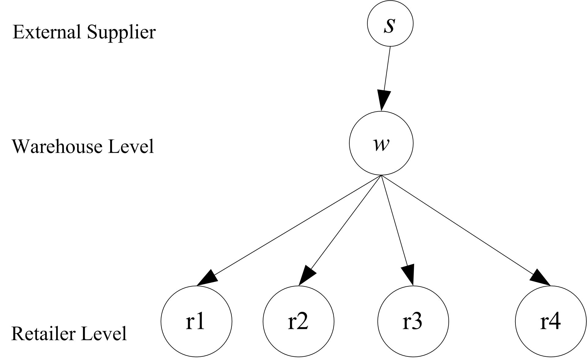
Suppose that the retail locations do not allow back ordering. That is, customers who arrive when there is not enough to fill their demand are lost. In addition, suppose that the amount demanded for each customer is governed by a shifted geometric random variable with parameter p = 0.9. The warehouse and the retailers control the SKU with (s, S) policies as shown in the following table.
| Policy (s, S) | Demand Poisson (mean rate per day) | |
|---|---|---|
| Retailer 1 | (1, 3) | (0.2) |
| Retailer 2 | (1, 5) | (0.1) |
| Retailer 3 | (2, 6) | (0.3) |
| Retailer 4 | (1, 4) | (0.4) |
| Warehouse | (4, 16) |
The overall rate to the retailers is 1 demand per day, but individually they experience the rates as shown in the table. In other words, the retailers are not identical in terms of the policy or the demand that they experience. The lead time is 5 days for the warehouse and 1 day for each retailer. The warehouse allows back ordering.
- Develop an KSL model for this situation. Estimate the expected number of lost sales per year for each retailer, the average amount of inventory on hand at the retailers and at the warehouse, the fill rate for each retailer and for the warehouse, and the average number of items back ordered at the warehouse. Run the model for 10 replications of 3960 days with a warm up of 360 days.
- The unit cost of the item is 10 dollars and the holding charge at each retailer is (10, 15, 20, 25) percent per unit per year for the four retailers, respectively. Suppose the the holding charge at the warehouse is 15 percent per unit per year. Assume that the ordering cost at each location is approximately 2 dollars for each order placed. Develop an optimization model that will determine the optimal inventory policy parameters for each location that minimizes the overall total cost of inventory ordering and holding costs subject to at least 96 percent fill rates at each of the retailer locations and at least a 90 percent fill rate at the warehouse.